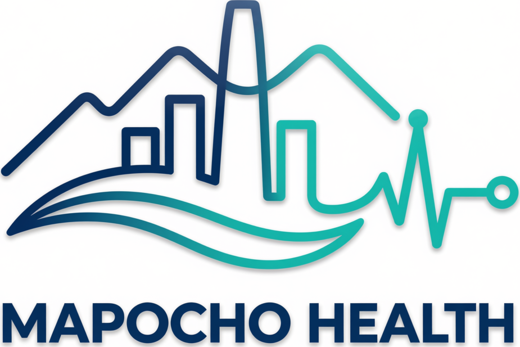

<title>PTP · Prepara tu Procedimiento</title>
<link rel="preconnect" href="https://fonts.googleapis.com">
<link rel="stylesheet" href="https://fonts.googleapis.com/css2?family=Montserrat:wght@600;700;800&family=Inter:wght@400;500;600;700&display=swap">
<script src="https://cdnjs.cloudflare.com/ajax/libs/jspdf/2.5.1/jspdf.umd.min.js"></script>
<script src="https://cdnjs.cloudflare.com/ajax/libs/jszip/3.10.1/jszip.min.js"></script>
<style>
/* Layout: sitio de 4 vistas (Inicio, Paciente, Instituciones, IA y seguridad) con identidad PTP Versión 1; tema claro deliberado + modo alto contraste. */
:root{
  color-scheme:light;
  --teal:#00A896; --btn:#00897B; --pet:#006D77; --pet-d:#075A63; --or:#FF8A3D;
  --ink:#13293D; --text:#2E4150; --muted:#566978; --line:#DCE5E9; --mist:#F2F6F8; --white:#FFFFFF;
  --soft:#E3F4F2; --warn-bg:#FFF1E7; --warn:#8A4210; --ok-bg:#E3F4EE; --ok:#0B6B53; --hl:#5FE3D2; --onpet:#D8F6F2;
  --display:'Montserrat',Arial,sans-serif; --body:'Inter',Arial,sans-serif;
  --r:16px; --rb:12px; font-size:18px;
}
:root.big{font-size:21px}
:root.hc{--muted:#2E4150;--text:#13293D;--line:#7F95A3;--btn:#00665C;--pet:#00525A;--soft:#D3EEEA}
*{box-sizing:border-box}
html{scroll-behavior:smooth}
@media (prefers-reduced-motion:reduce){html{scroll-behavior:auto}*{transition:none!important;animation:none!important}}
body{background:var(--mist);color:var(--text);font:400 1rem/1.55 var(--body);margin:0}
h1,h2,h3,h4{font-family:var(--display);color:var(--ink);margin:0;text-wrap:balance;line-height:1.15}
p{margin:0}
a{color:var(--pet)}
button,input,select,textarea{font:inherit}
:focus-visible{outline:3px solid var(--teal);outline-offset:2px;border-radius:6px}
.wrap{max-width:1180px;margin:0 auto;padding-inline:16px}
.ico{width:1.2em;height:1.2em;flex:none;fill:none;stroke:currentColor;stroke-width:2;stroke-linecap:round;stroke-linejoin:round}
.eyebrow{font:700 .7rem/1.2 var(--body);letter-spacing:.14em;text-transform:uppercase;color:var(--pet)}
.btn{display:inline-flex;align-items:center;justify-content:center;gap:.5em;min-height:48px;padding:.6em 1.2em;border-radius:var(--rb);font-weight:600;font-size:.95rem;text-decoration:none;cursor:pointer;border:1.5px solid transparent;line-height:1.2;text-align:center}
.btn-p{background:var(--btn);color:#fff}.btn-p:hover{background:var(--pet)}
.btn-s{background:var(--white);color:var(--pet);border-color:var(--teal)}.btn-s:hover{background:var(--soft)}
.btn-w{background:#fff;color:var(--pet)}.btn-w:hover{background:var(--onpet)}
.btn-o{background:transparent;color:#fff;border-color:var(--hl)}.btn-o:hover{background:rgba(255,255,255,.1)}
.btn-sm{min-height:44px;padding:.4em .9em;font-size:.85rem}
.btn[disabled]{opacity:.55;cursor:not-allowed}
.chip{display:inline-flex;align-items:center;gap:.4em;font:700 .68rem/1.1 var(--body);letter-spacing:.05em;text-transform:uppercase;padding:.45em .7em;border-radius:8px}
.chip-soft{background:var(--soft);color:var(--pet)}.chip-warn{background:var(--warn-bg);color:var(--warn)}.chip-ok{background:var(--ok-bg);color:var(--ok)}.chip-pet{background:var(--pet);color:#fff}.chip-mut{background:var(--mist);color:var(--muted);border:1px solid var(--line)}
.card{background:var(--white);border:1px solid var(--line);border-radius:var(--r);padding:1.2rem}
.icirc{width:2.4rem;height:2.4rem;border-radius:50%;background:var(--soft);color:var(--pet);display:grid;place-items:center;flex:none}
.muted{color:var(--muted)}.small{font-size:.85rem}
.row{display:flex;gap:.75rem;flex-wrap:wrap;align-items:center}
.vh{position:absolute!important;width:1px;height:1px;overflow:hidden;clip:rect(0 0 0 0);white-space:nowrap}
.field{display:grid;gap:.35rem}
.field label,.lbl{font-weight:600;font-size:.85rem;color:var(--ink)}
select,input[type=text],input[type=number],input[type=date],input[type=time],input[type=datetime-local],textarea{min-height:48px;padding:.5rem .75rem;border:1.5px solid var(--line);border-radius:10px;background:var(--white);color:var(--ink);width:100%}
textarea{min-height:80px;resize:vertical}
.seg{display:flex;gap:.4rem;flex-wrap:wrap}
.seg label{display:flex;align-items:center;gap:.4rem;border:1.5px solid var(--line);border-radius:10px;padding:.45rem .75rem;cursor:pointer;font-size:.85rem;min-height:44px;background:var(--white)}
.seg label:has(input:checked){border-color:var(--teal);background:var(--soft)}
.seg input{accent-color:var(--teal)}
.okmsg{background:var(--ok-bg);color:var(--ok);border-radius:10px;padding:.7rem .9rem;font-size:.85rem}
.errmsg{background:var(--warn-bg);color:var(--warn);border-radius:10px;padding:.7rem .9rem;font-size:.85rem}
.ilogo{background:#fff;border-radius:10px;display:inline-grid;place-items:center;padding:.3rem .5rem;border:1px solid var(--line)}
.ilogo img{display:block;height:2.1rem;width:auto;max-width:9rem;object-fit:contain}
.ilogo.sm img{height:1.4rem;max-width:5.5rem}
.ilogo.lg img{height:3rem;max-width:12rem}
/* header */
.hdr{position:sticky;top:env(safe-area-inset-top,0px);z-index:30;background:rgba(255,255,255,.96);backdrop-filter:blur(8px);border-bottom:1px solid var(--line)}
.hdr .wrap{display:flex;align-items:center;gap:1rem;min-height:72px;flex-wrap:wrap;padding-block:.4rem}
.logo{display:flex;align-items:center;gap:.5rem;text-decoration:none;color:var(--ink)}
.logo b{font:800 1.55rem/1 var(--display);letter-spacing:-.02em;display:flex;align-items:flex-end;gap:2px}
.logo small{font:600 .62rem/1.1 var(--body);color:var(--ink);display:block;max-width:7.5em}
.demo{border:0;cursor:pointer}
.nav{margin-left:auto;display:flex;gap:.25rem;overflow-x:auto;max-width:100%;scrollbar-width:none}
.nav a{white-space:nowrap;text-decoration:none;color:var(--muted);font-weight:600;font-size:.9rem;padding:.7em .8em;border-bottom:3px solid transparent;min-height:44px;display:flex;align-items:center}
.nav a:hover{color:var(--pet)}
.nav a[aria-current="page"]{color:var(--pet);border-bottom-color:var(--teal)}
.demonote{background:var(--warn-bg);color:var(--warn);font-size:.85rem}
.demonote .wrap{display:flex;gap:1rem;align-items:center;justify-content:space-between;padding-block:.6rem;min-height:0}
.x{background:none;border:0;color:inherit;cursor:pointer;width:44px;height:44px;display:grid;place-items:center;border-radius:50%}
.live{display:inline-flex;align-items:center;gap:.4em;font-size:.75rem;font-weight:600;color:var(--muted)}
.live i{width:.55rem;height:.55rem;border-radius:50%;background:#9AA9B4}
.live.on i{background:var(--teal);box-shadow:0 0 0 3px var(--soft)}
main{padding-block:2rem 5rem}
.view[hidden]{display:none}
.sect{margin-top:3rem}
.sect-h{display:grid;gap:.5rem;margin-bottom:1.25rem}
.sect-h h2{font-size:1.6rem}
/* ===== portada ===== */
.cover{position:relative;overflow:hidden;border-radius:24px;background:var(--pet-d);color:#fff;min-height:540px;display:grid;grid-template-columns:1.1fr 1fr}
.cover .photo{position:absolute;inset:0 0 0 46%;background:url(img/portada-v2.jpg) 60% 18%/cover}
.cover .fade{position:absolute;inset:0 0 0 38%;background:linear-gradient(90deg,var(--pet-d) 0%,rgba(7,90,99,.85) 22%,rgba(7,90,99,0) 55%)}
.cover svg.ring{position:absolute;left:49%;top:44%;width:200px;height:auto}
.fab[hidden],.chat[hidden],.field[hidden]{display:none!important}
.cover .txt{position:relative;padding:clamp(1.6rem,4.5vw,3.6rem);display:grid;gap:1.3rem;align-content:space-between}
.cover .brand{display:grid;justify-items:start}
.cover .brand .mk{display:grid;justify-items:end}
.cover .brand b{font:800 clamp(4rem,9vw,6.4rem)/.9 var(--display);letter-spacing:-.03em}
.cover .brand small{font-weight:600;font-size:1rem;margin-top:.3rem}
.cover h1{color:#fff;font-size:clamp(2rem,4vw,3rem);font-weight:700;max-width:17ch;line-height:1.1}
.cover h1 span{color:var(--hl)}
.cover hr{width:72px;border:0;border-top:4px solid var(--or);margin:0}
.cover .sub{font-weight:600;font-size:1.05rem}
.cover .meta{color:#BFE6E2;font-size:.9rem}
.benef{display:grid;grid-template-columns:repeat(3,1fr);gap:1rem;margin-top:1rem}
.benef div{display:flex;gap:.75rem;align-items:center;background:var(--white);border:1px solid var(--line);border-radius:var(--r);padding:1rem;font-weight:600;color:var(--ink)}
.insts{display:grid;grid-template-columns:repeat(3,1fr);gap:1rem}
.insts a{display:grid;gap:.6rem;justify-items:start;text-decoration:none;color:inherit}
.insts a:hover{border-color:var(--teal)}
.exp{display:grid;grid-template-columns:repeat(3,1fr);gap:1rem}
.exp .card{display:grid;gap:.6rem;align-content:start}
.exp h3{font-size:1.15rem}
.exp a{font-weight:600;text-decoration:none;display:inline-flex;gap:.3em;align-items:center;min-height:44px}
.band{margin-top:3rem;background:var(--pet);color:#fff;border-radius:24px;padding:2rem;display:flex;gap:1.5rem;align-items:center;justify-content:space-between;flex-wrap:wrap}
.band h2{color:#fff;font-size:1.5rem;max-width:22ch}.band h2 span{color:var(--hl)}
.band p{color:var(--onpet)}
.tm{font-size:.75rem;color:var(--muted);margin-top:1rem}
/* ===== paciente ===== */
.pbar-top{display:flex;gap:.75rem;align-items:end;justify-content:space-between;flex-wrap:wrap;margin-bottom:1rem}
.pbar-top .field{min-width:min(100%,320px)}
.pgrid{display:grid;grid-template-columns:1fr 360px;gap:1.25rem;align-items:start}
.pgrid>*{min-width:0}
.welcome{display:grid;grid-template-columns:1fr auto;gap:1.25rem;align-items:center}
.welcome h1{font-size:2rem;margin-top:.3rem}
.welcome .meta{color:var(--text);margin-top:.35rem}
.whead{display:flex;justify-content:space-between;gap:1rem;align-items:flex-start;flex-wrap:wrap;margin-bottom:.8rem}
.prog{text-align:center}
.prog b{font-family:var(--display);color:var(--ink);font-size:1.05rem}
.tools{display:flex;gap:.5rem;flex-wrap:wrap;margin-top:1rem}
.tool{display:inline-flex;align-items:center;gap:.45em;min-height:44px;padding:.35em .9em;border-radius:999px;border:1.5px solid var(--line);background:var(--white);color:var(--pet);font-weight:600;font-size:.85rem;cursor:pointer}
.tool[aria-pressed="true"]{background:var(--pet);color:#fff;border-color:var(--pet)}
.alert{display:flex;gap:.8rem;align-items:flex-start;background:var(--warn-bg);color:var(--warn);border-radius:var(--r);padding:.9rem 1.1rem;margin-top:1rem;font-size:.9rem}
.alert b{display:block}
.alert.info{background:var(--soft);color:var(--pet)}
.today{border:2px solid var(--teal);margin-top:1rem;display:grid;gap:.8rem}
.today h2{font-size:1.45rem}
.speak{display:none;gap:.5rem;flex-wrap:wrap;margin-top:.6rem}.speak.on{display:flex}
.side{display:grid;gap:1rem;position:sticky;top:96px}
.side h3{font-size:1.05rem}
.agl{display:grid;gap:.4rem;margin-top:.7rem;max-height:340px;overflow:auto}
.agi{display:grid;grid-template-columns:1fr auto;gap:.5rem;align-items:center;padding:.55rem .7rem;border:1px solid var(--line);border-radius:10px;font-size:.82rem}
.agi b{color:var(--ink);display:block}
.mini{background:none;border:0;color:var(--pet);cursor:pointer;font-weight:600;font-size:.8rem;min-height:36px;padding:0 .4rem}
.stack{display:grid;gap:.5rem;margin-top:.8rem}
.myreq{display:grid;gap:.4rem;margin-top:.6rem}
.myreq div{display:flex;justify-content:space-between;gap:.5rem;align-items:center;font-size:.82rem;border-top:1px solid var(--line);padding-top:.5rem}
/* timeline */
.tl{display:grid;gap:.9rem;margin:1rem 0 0;padding:0;list-style:none}
.tli{display:grid;grid-template-columns:7.4rem 1.4rem 1fr;gap:.75rem;align-items:start}
.tli>*{min-width:0}
.tli .when{display:grid;gap:.25rem;justify-items:start;padding-top:.85rem}
.tli .when span.muted{font-size:.75rem}
.tli .dot{width:1.1rem;height:1.1rem;border-radius:50%;border:3px solid var(--teal);background:var(--white);margin-top:1rem}
.tli .dot.done{background:var(--teal)}.tli .dot.goal{border-color:var(--or)}.tli .dot.done.goal{background:var(--or)}
.step{background:var(--white);border:1px solid var(--line);border-radius:var(--r);overflow:hidden}
.step.cur{border:2px solid var(--teal)}
.step summary{list-style:none;cursor:pointer;display:grid;grid-template-columns:1fr auto;gap:.75rem;padding:1rem 1.1rem;align-items:center}
.step summary::-webkit-details-marker{display:none}
.step summary h3{font-size:1.02rem}
.step summary p{color:var(--muted);font-size:.85rem;margin-top:.2rem}
.step summary .more{font-size:.8rem;font-weight:600;color:var(--pet);display:flex;align-items:center;gap:.4em;white-space:nowrap;flex-wrap:wrap;justify-content:flex-end}
.step[open] summary .more svg{transform:rotate(180deg)}
.step .body{padding:0 1.1rem 1.1rem;display:grid;gap:.9rem}
.step .body ul.pl{margin:0;padding-left:1.1rem;display:grid;gap:.3rem}
.items{display:flex;flex-wrap:wrap;gap:.45rem;padding:0;margin:0;list-style:none}
.items li{display:flex;gap:.4em;align-items:center;background:var(--mist);border-radius:999px;padding:.35em .8em;font-size:.82rem;color:var(--ink)}
.items.no li{background:var(--warn-bg);color:var(--warn)}
.jarras{display:grid;grid-template-columns:1fr auto 1fr;gap:.75rem;align-items:center}
.jarra{background:var(--soft);border-radius:var(--r);padding:1rem;text-align:center;display:grid;gap:.3rem;justify-items:center}
.jarra svg{width:46px;height:58px}
.jarra b{font-family:var(--display);color:var(--ink)}
.vasos{display:flex;gap:.4rem;flex-wrap:wrap}
.vasos span{display:grid;justify-items:center;gap:.2rem;background:var(--soft);border-radius:10px;padding:.45rem .5rem;font-size:.72rem;min-width:3.6rem;color:var(--ink)}
.vasos span b{font-size:.78rem}
.escala{display:grid;grid-template-columns:repeat(5,1fr);gap:.5rem}
.escala div{border-radius:12px;border:1px solid var(--line);overflow:hidden;font-size:.75rem;background:var(--white)}
.escala i{display:block;height:46px}
.escala p{padding:.45rem .5rem;line-height:1.25}.escala b{display:block;color:var(--ink)}
.stepact{display:flex;gap:.5rem;flex-wrap:wrap;align-items:center}
.tagline{display:flex;gap:.5rem;flex-wrap:wrap;align-items:center}
.agform{background:var(--mist);border-radius:12px;padding:.9rem;display:grid;gap:.7rem;grid-template-columns:1fr 1fr}
.agform .row{grid-column:1/-1}
.agok{font-size:.8rem;color:var(--ok);font-weight:600}
/* assistant */
.fab{position:fixed;right:max(16px,env(safe-area-inset-right,0px));bottom:calc(16px + env(safe-area-inset-bottom,0px));z-index:40;display:inline-flex;align-items:center;gap:.5rem;background:var(--pet);color:#fff;border:0;border-radius:999px;padding:.85rem 1.2rem;font-weight:700;cursor:pointer;box-shadow:0 10px 28px rgba(19,41,61,.28);min-height:52px}
.fab:hover{background:var(--pet-d)}
.chat{position:fixed;right:16px;bottom:calc(84px + env(safe-area-inset-bottom,0px));z-index:41;width:min(420px,calc(100vw - 32px));height:min(620px,calc(100vh - 140px));background:var(--white);border:1px solid var(--line);border-radius:20px;box-shadow:0 20px 50px rgba(19,41,61,.25);display:grid;grid-template-rows:auto 1fr auto;overflow:hidden}
.chat[hidden]{display:none}
.chat header{background:var(--pet);color:#fff;padding:.9rem 1rem;display:flex;gap:.6rem;align-items:center;justify-content:space-between}
.chat header b{font-family:var(--display);display:block}
.chat header small{color:var(--onpet);font-size:.75rem}
.msgs{overflow:auto;padding:1rem;display:grid;gap:.6rem;align-content:start}
.msg{max-width:88%;padding:.65rem .85rem;border-radius:16px;font-size:.88rem;white-space:pre-wrap}
.msg.u{justify-self:end;background:var(--btn);color:#fff;border-bottom-right-radius:4px}
.msg.a{justify-self:start;background:var(--mist);color:var(--ink);border-bottom-left-radius:4px}
.msg.n{justify-self:stretch;max-width:100%;background:var(--warn-bg);color:var(--warn);font-size:.78rem}
.sugg{display:flex;gap:.4rem;flex-wrap:wrap}
.sugg button{border:1.5px solid var(--teal);background:#fff;color:var(--pet);border-radius:999px;padding:.4rem .75rem;font-size:.78rem;font-weight:600;cursor:pointer;min-height:40px}
.chat form{display:flex;gap:.5rem;padding:.75rem;border-top:1px solid var(--line)}
.chat form input{flex:1;min-width:0}
/* ===== instituciones ===== */
.ibanner{display:grid;grid-template-columns:.9fr 1.1fr;max-height:340px;background:var(--pet);border-radius:24px;overflow:hidden;margin-bottom:2rem;color:#fff}
.ibanner .t{padding:clamp(1.1rem,2.6vw,1.8rem);display:grid;gap:.6rem;align-content:center}
.ibanner h2{color:#fff;font-size:clamp(1.3rem,2.2vw,1.7rem);max-width:20ch}
.ibanner h2 span{color:var(--hl)}
.ibanner p{color:var(--onpet);max-width:46ch;font-size:.9rem}
.ibanner ul{list-style:none;padding:0;margin:0;display:grid;gap:.3rem}
.ibanner li{display:flex;gap:.5rem;align-items:center;font-weight:600;font-size:.82rem}
.ibanner li svg{color:var(--hl)}
.ibanner .ph{min-height:300px;background:url(img/banner-familia-v2.jpg) center 42%/cover;position:relative}
.ibanner .ph::before{content:"";position:absolute;inset:0;background:linear-gradient(90deg,var(--pet) 0%,rgba(0,109,119,0) 12%)}
.iswitch{display:grid;grid-template-columns:repeat(3,1fr);gap:1rem}
.iswitch button{background:var(--white);border:2px solid var(--line);border-radius:var(--r);padding:1rem;display:grid;gap:.6rem;justify-items:start;cursor:pointer;text-align:left;color:var(--text)}
.iswitch button[aria-pressed="true"]{border-color:var(--teal);box-shadow:0 0 0 4px var(--soft)}
.iswitch .cnt{font-size:.8rem;color:var(--muted)}
.ihead{display:flex;justify-content:space-between;gap:1rem;align-items:center;flex-wrap:wrap;margin-top:1.5rem}
.ihead h1{font-size:1.9rem}
.pending{display:flex;gap:1rem;align-items:center;justify-content:space-between;flex-wrap:wrap;background:var(--white);border:1px solid var(--line);border-left:6px solid var(--or);border-radius:var(--r);padding:1rem 1.2rem;margin-top:1.25rem}
.kpis{display:grid;grid-template-columns:repeat(4,1fr);gap:1rem;margin-top:1.25rem}
.kpi b{font:700 2rem/1 var(--display);color:var(--pet);display:block;font-variant-numeric:tabular-nums}
.kpi.warn{background:var(--warn-bg);border-color:#F6D2B8}.kpi.warn b{color:var(--warn)}
.kpi p{font-size:.85rem;color:var(--muted);margin-top:.35rem}
.igrid{display:grid;grid-template-columns:300px 1fr;gap:1rem;margin-top:1rem}
.igrid>*{min-width:0}
.donut{display:grid;gap:1rem;justify-items:center;align-content:start}
.legend{display:grid;gap:.4rem;width:100%}
.legend div{display:flex;gap:.6rem;align-items:center;font-size:.85rem}
.legend i{width:.8rem;height:.8rem;border-radius:50%;flex:none}
.legend b{margin-left:auto;font-variant-numeric:tabular-nums;color:var(--ink)}
table.pt{width:100%;border-collapse:collapse;font-size:.85rem}
table.pt th{text-align:left;color:var(--muted);font-weight:600;padding:.6rem .5rem;border-bottom:1px solid var(--line)}
table.pt td{padding:.7rem .5rem;border-bottom:1px solid var(--line);vertical-align:middle}
.pname{display:flex;gap:.6rem;align-items:center}
.pbar{width:80px;height:8px;background:var(--line);border-radius:8px;overflow:hidden;display:inline-block;vertical-align:middle;margin-right:.4rem}
.pbar i{display:block;height:100%;background:var(--teal)}
.inbox{display:grid;gap:.8rem}
.req{display:grid;gap:.7rem}
.req.done{opacity:.85;background:var(--mist)}
.signals{display:grid;grid-template-columns:repeat(3,1fr);gap:1rem}
.signals .card{display:grid;gap:.5rem;align-content:start}
.signals h3{font-size:1rem}
details.create summary{list-style:none;cursor:pointer}
details.create summary::-webkit-details-marker{display:none}
.cform{display:grid;grid-template-columns:2fr 1fr 1.3fr 1fr 1.4fr;gap:.8rem;margin-top:1rem;align-items:end}
.empty{text-align:center;color:var(--muted);padding:2rem 1rem}
/* ia */
.two{display:grid;grid-template-columns:1fr 1fr;gap:1rem}
.lst{list-style:none;padding:0;margin:.8rem 0 0;display:grid;gap:.6rem}
.lst li{display:flex;gap:.6rem;align-items:flex-start;font-size:.92rem}
.lst li svg{margin-top:.2em;color:var(--pet)}
.prod{background:var(--soft);border-color:transparent}
.dec{display:grid;grid-template-columns:repeat(4,1fr);gap:1rem}
.dec .card b{display:block;font-family:var(--display);color:var(--ink);margin-bottom:.3rem}
footer{border-top:1px solid var(--line);background:var(--white)}
footer .wrap{display:grid;gap:.4rem;padding-block:1.5rem 6rem;font-size:.8rem;color:var(--muted)}
footer .mh{display:flex;align-items:center;gap:1rem;flex-wrap:wrap;font-size:1rem;color:var(--ink);padding-bottom:.6rem;border-bottom:1px solid var(--line);margin-bottom:.4rem}
footer .mh b{color:#0F3A6B}
footer .mh img{height:64px;width:auto}
@media (max-width:960px){
  .ibanner{grid-template-columns:1fr;max-height:none}.ibanner .ph{order:-1;min-height:260px}.ibanner .ph::before{background:linear-gradient(0deg,var(--pet) 0%,rgba(0,109,119,0) 35%)}
  .pgrid,.igrid,.two{grid-template-columns:1fr}
  .exp,.benef,.signals,.insts,.iswitch{grid-template-columns:1fr}
  .kpis,.dec{grid-template-columns:1fr 1fr}
  .side{position:static}
  .cform{grid-template-columns:1fr 1fr}
  .cover{display:flex;flex-direction:column;min-height:0}
  .cover .photo{position:relative;inset:auto;height:clamp(300px,78vw,480px);background-position:center 18%}
  .cover .photo::after{content:"";position:absolute;inset:0;background:linear-gradient(180deg,rgba(7,90,99,0) 50%,rgba(7,90,99,.75) 80%,var(--pet-d) 100%)}
  .cover .fade{display:none}
  .cover svg.ring{left:-10px;top:calc(clamp(300px,78vw,480px) - 170px);width:120px}
  .cover .txt{padding-top:.5rem}
}
@media (max-width:620px){
  :root{font-size:17px}:root.big{font-size:20px}
  .welcome{grid-template-columns:1fr}
  .welcome .prog{justify-self:start;display:flex;align-items:center;gap:.75rem}
  .welcome h1{font-size:1.6rem}
  .tli{grid-template-columns:1fr;gap:.4rem}
  .tli .dot{display:none}
  .tli .when{grid-auto-flow:column;justify-content:start;align-items:center;gap:.5rem;padding-top:0}
  .escala{grid-template-columns:1fr 1fr}
  .jarras,.agform,.cform{grid-template-columns:1fr}
  table.pt thead{display:none}
  table.pt,table.pt tbody,table.pt tr,table.pt td{display:block;width:100%}
  table.pt tr{border:1px solid var(--line);border-radius:12px;padding:.6rem .8rem;margin-bottom:.6rem}
  table.pt td{border:0;padding:.25rem 0}
  table.pt td[data-l]::before{content:attr(data-l) " · ";color:var(--muted);font-weight:600}
  .nav{margin-left:0;width:100%}
  .fab span{display:none}
}
/* ========== ALERTAS DE NO-SHOW (semáforo compacto) ========== */
.ns{display:inline-flex;align-items:center;gap:.4rem;font-size:.78rem;font-weight:600;color:var(--ink);white-space:nowrap;line-height:1.2}
.ns i{width:.75rem;height:.75rem;border-radius:50%;flex:none;display:inline-block}
.ns-ok i{background:#00A896}
.ns-wait i{background:#fff;border:2px solid #006D77}
.ns-48 i{background:#F2B705;box-shadow:0 0 0 3px #FFF4CC}
.ns-24 i{background:#D62D20;box-shadow:0 0 0 3px #FBE0DE;animation:nsp 1.6s ease-in-out infinite}
.ns-past i{background:#fff;border:2px dashed #566978}
.ns-past{color:var(--muted)}
@keyframes nsp{50%{box-shadow:0 0 0 5px #FBE0DE}}
.ns-sub{display:block;font-size:.7rem;font-weight:500;color:var(--muted);margin:.15rem 0 0 1.15rem}
.ns-sub.done{color:var(--ok)}
.ns-btn{background:none;border:1px solid var(--line);border-radius:999px;color:var(--pet);font:600 .7rem/1 var(--body);padding:.35rem .6rem;margin:.3rem 0 0 1.15rem;cursor:pointer;min-height:30px}
.ns-btn:hover{border-color:var(--teal);background:var(--soft)}
.nsbar{display:flex;flex-wrap:wrap;gap:.4rem .9rem;align-items:center;margin-top:.7rem;padding:.55rem .75rem;background:var(--mist);border-radius:10px;font-size:.78rem;color:var(--muted)}
.nsbar b{color:var(--ink);font-variant-numeric:tabular-nums}
.nsbar .lbl{font-size:.78rem}
.ns-sub,.ns-btn{white-space:nowrap}
.ns-24.ns-done i{animation:none}
@media(max-width:820px){.ns-sub,.ns-btn{margin-left:0}}
@media (prefers-reduced-motion:reduce){.ns-24 i{animation:none}}
</style>

<svg width="0" height="0" style="position:absolute" aria-hidden="true">
  <symbol id="i-check" viewBox="0 0 24 24"><path d="M5 12.5l4.5 4.5L19 7.5"/></symbol>
  <symbol id="i-clock" viewBox="0 0 24 24"><circle cx="12" cy="12" r="8.5"/><path d="M12 7.5V12l3 2"/></symbol>
  <symbol id="i-book" viewBox="0 0 24 24"><path d="M4 5h6a2 2 0 0 1 2 2v12a2 2 0 0 0-2-2H4zM20 5h-6a2 2 0 0 0-2 2v12a2 2 0 0 1 2-2h6z"/></symbol>
  <symbol id="i-heart" viewBox="0 0 24 24"><path d="M12 20s-7.5-4.6-7.5-10.2A4.2 4.2 0 0 1 12 7.3a4.2 4.2 0 0 1 7.5 2.5C19.5 15.4 12 20 12 20z"/></symbol>
  <symbol id="i-users" viewBox="0 0 24 24"><circle cx="9" cy="8.5" r="3.2"/><path d="M3 19.5c0-3.2 2.7-5.3 6-5.3s6 2.1 6 5.3M16 5.5a3 3 0 0 1 0 6M18.5 19.5c0-2.2-1-3.9-2.8-4.8"/></symbol>
  <symbol id="i-shield" viewBox="0 0 24 24"><path d="M12 3l7.5 3v5.5c0 4.8-3.1 8-7.5 9.5-4.4-1.5-7.5-4.7-7.5-9.5V6z"/><path d="M9 12l2 2 4-4"/></symbol>
  <symbol id="i-chat" viewBox="0 0 24 24"><path d="M5 5.5h14a1.5 1.5 0 0 1 1.5 1.5v8a1.5 1.5 0 0 1-1.5 1.5H10l-4.5 3.5V16.5H5A1.5 1.5 0 0 1 3.5 15V7A1.5 1.5 0 0 1 5 5.5z"/></symbol>
  <symbol id="i-ear" viewBox="0 0 24 24"><path d="M11 5v14M7 9v6M15 8v8M19 10.5v3M3 11v2"/></symbol>
  <symbol id="i-text" viewBox="0 0 24 24"><path d="M3.5 18L8 6l4.5 12M5.2 14h5.6M14.5 18l2.7-7 2.8 7M15.4 15.8h3.6"/></symbol>
  <symbol id="i-contrast" viewBox="0 0 24 24"><circle cx="12" cy="12" r="8.5"/><path d="M12 3.5v17A8.5 8.5 0 0 0 12 3.5z" fill="currentColor"/></symbol>
  <symbol id="i-cal" viewBox="0 0 24 24"><rect x="3.5" y="5" width="17" height="15.5" rx="2.5"/><path d="M3.5 10h17M8 3v4M16 3v4"/></symbol>
  <symbol id="i-bell" viewBox="0 0 24 24"><path d="M6 16.5V11a6 6 0 0 1 12 0v5.5l1.5 2h-15zM10 20.5a2 2 0 0 0 4 0"/></symbol>
  <symbol id="i-doc" viewBox="0 0 24 24"><path d="M6 3.5h8l4.5 4.5v12.5H6z"/><path d="M14 3.5V8h4.5M9 13h6M9 16.5h6"/></symbol>
  <symbol id="i-down" viewBox="0 0 24 24"><path d="M6 9l6 6 6-6"/></symbol>
  <symbol id="i-dl" viewBox="0 0 24 24"><path d="M12 4v11M7 10.5l5 5 5-5M5 19.5h14"/></symbol>
  <symbol id="i-arrow" viewBox="0 0 24 24"><path d="M5 12h14M13 6l6 6-6 6"/></symbol>
  <symbol id="i-alert" viewBox="0 0 24 24"><path d="M12 3.5l9 16H3z"/><path d="M12 10v4.5M12 17.2v.3"/></symbol>
  <symbol id="i-lock" viewBox="0 0 24 24"><rect x="5" y="10.5" width="14" height="10" rx="2"/><path d="M8 10.5V8a4 4 0 0 1 8 0v2.5"/></symbol>
  <symbol id="i-plus" viewBox="0 0 24 24"><path d="M12 5v14M5 12h14"/></symbol>
  <symbol id="i-food" viewBox="0 0 24 24"><path d="M4 11h16a8 8 0 0 1-16 0zM8 4c0 2 2 2 2 4M12 4c0 2 2 2 2 4"/></symbol>
  <symbol id="i-cup" viewBox="0 0 24 24"><path d="M6 4h12l-1.5 16h-9z"/><path d="M6.6 10h10.8"/></symbol>
  <symbol id="i-pin" viewBox="0 0 24 24"><path d="M12 21s-6.5-6-6.5-11a6.5 6.5 0 0 1 13 0c0 5-6.5 11-6.5 11z"/><circle cx="12" cy="10" r="2.3"/></symbol>
  <symbol id="i-phone" viewBox="0 0 24 24"><path d="M6.5 3.5h3l1.5 4-2 1.5a11 11 0 0 0 6 6l1.5-2 4 1.5v3a2 2 0 0 1-2 2A16.5 16.5 0 0 1 4.5 5.5a2 2 0 0 1 2-2z"/></symbol>
  <symbol id="i-spark" viewBox="0 0 24 24"><path d="M12 3l1.8 5.2L19 10l-5.2 1.8L12 17l-1.8-5.2L5 10l5.2-1.8zM18.5 15.5l.8 2.2 2.2.8-2.2.8-.8 2.2-.8-2.2-2.2-.8 2.2-.8z"/></symbol>
  <symbol id="i-send" viewBox="0 0 24 24"><path d="M4 12l16-8-6 16-2.5-6.5z"/></symbol>
  <symbol id="i-x" viewBox="0 0 24 24"><path d="M6 6l12 12M18 6L6 18"/></symbol>
</svg>

<header class="hdr">
  <div class="wrap">
    <a class="logo" href="#inicio" aria-label="PTP, Prepara tu Procedimiento, ir al inicio">
      <b><svg width="40" height="21" viewBox="0 0 200 106" aria-hidden="true" class="lg-c"></svg>PTP</b>
      <small>Prepara tu Procedimiento</small>
    </a>
    <button class="chip chip-warn demo" id="demoBtn" aria-expanded="false" aria-controls="demoNote">Demo ficticia</button>
    <span class="live" id="liveTag"><i></i><span>Conectando…</span></span>
    <nav class="nav" aria-label="Secciones">
      <a href="#inicio" data-v="inicio">Inicio</a>
      <a href="#paciente" data-v="paciente">Paciente</a>
      <a href="#instituciones" data-v="instituciones">Instituciones</a>
      <a href="#ia" data-v="ia">IA y seguridad</a>
    </nav>
  </div>
  <div class="demonote" id="demoNote" hidden>
    <div class="wrap">
      <p><b>Demo con casos 100% ficticios.</b> No ingreses datos reales de salud. El contenido es demostrativo y no reemplaza la indicación de tu equipo tratante. Las marcas de las instituciones se usan solo para ilustrar el prototipo.</p>
      <button class="x" id="demoClose" aria-label="Cerrar aviso"><svg class="ico"><use href="#i-x"/></svg></button>
    </div>
  </div>
</header>

<main class="wrap">
  <!-- ================= INICIO ================= -->
  <section class="view" data-view="inicio" aria-labelledby="h-inicio">
    <div class="cover">
      <div class="photo" role="img" aria-label="Mujer mayor sonriente, con lentes, apoyando el mentón en su mano"></div>
      <div class="fade" aria-hidden="true"></div>
      <svg class="ring" viewBox="0 0 400 400" aria-hidden="true"><path d="M60 330A200 200 0 0 1 160 30" fill="none" stroke="#2ED3BF" stroke-width="22"/></svg>
      <div class="txt">
        <div class="brand"><div class="mk"><svg width="120" height="64" viewBox="0 0 200 106" aria-hidden="true" class="lg-w"></svg><b>PTP</b></div><small>Prepara tu Procedimiento</small></div>
        <div style="display:grid;gap:1.1rem">
          <h1 id="h-inicio">Una mejor experiencia comienza <span>antes del procedimiento.</span></h1>
          <hr>
          <p class="sub">Personas más preparadas. Sistemas de salud más fuertes.</p>
          <div class="row"><a class="btn btn-w" href="#instituciones" data-go="crear">Crear PTP de ejemplo</a><a class="btn btn-o" href="#paciente">Explorar vista paciente</a></div>
          <p class="meta">Plataforma SaaS de salud · Octubre 2026</p>
        </div>
      </div>
    </div>
    <div class="benef">
      <div><span class="icirc"><svg class="ico"><use href="#i-book"/></svg></span>Información clara</div>
      <div><span class="icirc"><svg class="ico"><use href="#i-bell"/></svg></span>Alarmas a tiempo</div>
      <div><span class="icirc"><svg class="ico"><use href="#i-heart"/></svg></span>Apoyo en cada paso</div>
    </div>

    <div class="sect">
      <div class="sect-h"><p class="eyebrow">Instituciones de la demo</p><h2>Cada institución, su propia pauta</h2><p class="muted">PTP adapta el plan al protocolo de cada centro y a la hora de la cita.</p></div>
      <div class="insts" id="instCards"></div>
    </div>

    <div class="sect">
      <div class="sect-h"><p class="eyebrow">Explora el prototipo</p><h2>Tres experiencias conectadas</h2></div>
      <div class="exp">
        <article class="card"><span class="icirc"><svg class="ico"><use href="#i-heart"/></svg></span><h3>Para pacientes</h3><p class="muted">Una ruta visual con su pauta, alarmas en el celular, un asistente para dudas generales y un botón para pedir que la contacten.</p><a href="#paciente">Ver guía paciente <svg class="ico"><use href="#i-arrow"/></svg></a></article>
        <article class="card"><span class="icirc"><svg class="ico"><use href="#i-users"/></svg></span><h3>Para instituciones</h3><p class="muted">Crea casos, revisa el avance y recibe en vivo las solicitudes de ayuda por teléfono, WhatsApp o correo.</p><a href="#instituciones">Abrir panel <svg class="ico"><use href="#i-arrow"/></svg></a></article>
        <article class="card"><span class="icirc"><svg class="ico"><use href="#i-shield"/></svg></span><h3>IA y seguridad</h3><p class="muted">Los límites del asistente, los controles diseñados para Azure y la preparación para la Ley 21.719.</p><a href="#ia">Ver arquitectura <svg class="ico"><use href="#i-arrow"/></svg></a></article>
      </div>
    </div>

    <div class="band">
      <h2>Personas más preparadas. <span>Sistemas de salud más fuertes.</span></h2>
      <p>PTP · Prepara tu Procedimiento<br>Prototipo desarrollado por el equipo Mapocho Health</p>
    </div>
  </section>

  <!-- ================= PACIENTE ================= -->
  <section class="view" data-view="paciente" aria-labelledby="h-pac" hidden>
    <div class="pbar-top">
      <div class="field"><label for="pSel">Ver la guía de</label><select id="pSel"></select></div>
      <p class="muted small">Casos ficticios. Lo que marques se guarda en la demo.</p>
    </div>
    <div id="pEmpty" class="card empty" hidden>Aún no hay pacientes. Crea uno desde <a href="#instituciones">Instituciones</a>.</div>
    <div class="pgrid" id="pMain">
      <div>
        <div class="card">
          <div class="whead"><p class="eyebrow">Te acompañamos paso a paso</p><span class="ilogo lg" id="pLogo"></span></div>
          <div class="welcome">
            <div>
              <h1 id="h-pac">Hola, <span id="pName"></span></h1>
              <p class="meta" id="pMeta"></p>
              <p class="muted small" id="pPlace"></p>
            </div>
            <div class="prog" aria-live="polite"><span id="pArc"></span><b id="pCount"></b></div>
          </div>
          <div class="tools" role="group" aria-label="Opciones de lectura y apoyo">
            <button class="tool" id="tBig" aria-pressed="false"><svg class="ico"><use href="#i-text"/></svg>Letra más grande</button>
            <button class="tool" id="tHc" aria-pressed="false"><svg class="ico"><use href="#i-contrast"/></svg>Más contraste</button>
            <button class="tool" id="tListen"><svg class="ico"><use href="#i-ear"/></svg>Escuchar próximo paso</button>
            <button class="tool" id="tAsk"><svg class="ico"><use href="#i-spark"/></svg>Preguntar al asistente</button>
            <a class="tool" href="#ayuda" style="text-decoration:none"><svg class="ico"><use href="#i-phone"/></svg>Pedir que me contacten</a>
          </div>
          <div class="speak" id="speakBar" role="group" aria-label="Control de lectura"><button class="btn btn-s btn-sm" id="sPause">Pausar lectura</button><button class="btn btn-s btn-sm" id="sStop">Detener lectura</button></div>
        </div>
        <div class="alert" id="pProto" role="note"></div>
        <div class="card today" id="today" aria-labelledby="h-today"></div>
        <div class="sect" style="margin-top:2rem">
          <div class="sect-h"><p class="eyebrow">Tu cronograma</p><h2>Un paso a la vez</h2><p class="muted">Abre un paso para ver el detalle, programarlo en tu agenda o marcarlo como listo.</p></div>
          <ol class="tl" id="tl"></ol>
        </div>
      </div>

      <aside class="side" aria-label="Agenda y ayuda">
        <div class="card" id="agenda">
          <p class="eyebrow">Mi agenda</p>
          <h3 style="margin-top:.4rem">Alarmas en tu celular</h3>
          <p class="muted small" style="margin-top:.3rem">Programa un paso desde su tarjeta o todos de una vez. Luego descarga las alarmas y ábrelas en tu celular.</p>
          <div class="agl" id="agList"></div>
          <div class="stack">
            <button class="btn btn-s btn-sm" id="agAll"><svg class="ico"><use href="#i-cal"/></svg>Programar todos los pasos</button>
            <button class="btn btn-p btn-sm" id="agDl"><svg class="ico"><use href="#i-dl"/></svg>Descargar todas las alarmas</button>
          </div>
          <p class="muted small" id="agMsg" role="status" style="margin-top:.5rem"></p>
          <details style="margin-top:.4rem"><summary class="small" style="cursor:pointer;color:var(--pet);font-weight:600;min-height:36px;display:flex;align-items:center">Cómo agregarlas al celular</summary>
            <ol class="small muted" style="padding-left:1.1rem;margin:.4rem 0 0;display:grid;gap:.3rem"><li>Descarga <b>alarmas-ptp.ics</b> (si este visor lo entrega dentro de un .zip, ábrelo primero).</li><li>Toca el archivo .ics. En iPhone se abre Calendario; en Android, Google Calendar u otra agenda.</li><li>Confirma «Agregar todo». Cada evento trae su alarma.</li></ol></details>
        </div>
        <div class="card" id="ayuda">
          <p class="eyebrow">Ayuda</p>
          <h3 style="margin-top:.4rem">Pide que te contacten</h3>
          <form id="hForm" class="stack" style="margin-top:.8rem">
            <div class="field"><label for="hTopic">Tema</label><select id="hTopic"><option>Confirmar medicamentos</option><option>Dieta y alimentos</option><option>Preparación del laxante</option><option>Horarios y ayuno</option><option>Cambiar o confirmar mi hora</option><option>Otra consulta</option></select></div>
            <div class="field"><span class="lbl" id="hChL">¿Cómo te contactamos?</span>
              <div class="seg" role="radiogroup" aria-labelledby="hChL"><label><input type="radio" name="hCh" value="Teléfono" checked>Teléfono</label><label><input type="radio" name="hCh" value="WhatsApp">WhatsApp</label><label><input type="radio" name="hCh" value="Correo">Correo</label></div></div>
            <div class="field"><label for="hWhen">Horario preferido</label><select id="hWhen"><option>Lo antes posible</option><option>Mañana (9:00 a 13:00)</option><option>Tarde (14:00 a 19:00)</option></select></div>
            <div class="field"><label for="hMsg">Mensaje <span class="muted">(opcional, sin datos reales)</span></label><textarea id="hMsg" maxlength="300" placeholder="Ej.: ¿Puedo tomar mi medicamento de la presión?"></textarea></div>
            <button class="btn btn-p" type="submit" id="hSend"><svg class="ico"><use href="#i-send"/></svg>Enviar solicitud</button>
            <p class="okmsg" id="hOk" hidden role="status"></p>
          </form>
          <div class="myreq" id="myReq"></div>
        </div>
        <div class="card">
          <h3>Tu pauta en papel</h3>
          <p class="muted small" style="margin-top:.3rem">Checklist con fechas, horarios y casillas, para imprimir o leer sin conexión.</p>
          <button class="btn btn-s btn-sm" id="pdfBtn" style="margin-top:.8rem;width:100%"><svg class="ico"><use href="#i-doc"/></svg>Descargar pauta (PDF)</button>
          <p class="muted small" id="pdfMsg" role="status" style="margin-top:.5rem"></p>
        </div>
      </aside>
    </div>
  </section>

  <!-- ================= INSTITUCIONES ================= -->
  <section class="view" data-view="instituciones" aria-labelledby="h-ins" hidden>
    <div class="ibanner">
      <div class="t">
        <p class="eyebrow" style="color:var(--hl)">Para instituciones de salud</p>
        <h2>El acompañamiento que llega <span>hasta la casa del paciente.</span></h2>
        <p>Cada paciente y su familia siguen la pauta de tu centro desde el celular. Cuando alguien necesita ayuda, tu equipo lo ve al instante en este panel.</p>
        <ul><li><svg class="ico"><use href="#i-check"/></svg>Pauta propia de cada institución</li><li><svg class="ico"><use href="#i-check"/></svg>Solicitudes por teléfono, WhatsApp o correo</li><li><svg class="ico"><use href="#i-check"/></svg>Avance y alertas en un solo lugar</li></ul>
      </div>
      <div class="ph" role="img" aria-label="Una mujer joven acompaña a un hombre mayor mientras revisa la aplicación PTP en su celular"></div>
    </div>
    <div class="sect-h"><p class="eyebrow">Seguimiento institucional · demo</p><h2 id="h-ins-top" style="font-size:1.4rem">Elige la institución</h2></div>
    <div class="iswitch" id="iSwitch" role="group" aria-label="Institución"></div>
    <div class="ihead">
      <div class="row"><span class="ilogo lg" id="iLogo"></span><div><h1 id="h-ins">Panel de seguimiento</h1><p class="muted small" id="iProto"></p></div></div>
      <span class="live" id="liveTag2"><i></i><span></span></span>
    </div>
    <div id="pendBox"></div>
    <div class="kpis" id="kpis"></div>
    <div class="igrid">
      <div class="card donut"><h3 style="font-size:1rem;justify-self:start">Estado de pacientes</h3><div id="donut"></div><div class="legend" id="legend"></div></div>
      <div class="card">
        <div class="row" style="justify-content:space-between"><div><p class="eyebrow">Pacientes</p><h3 style="font-size:1.15rem;margin-top:.25rem">Próximos procedimientos</h3></div><span class="chip chip-mut" id="nCases"></span></div>
        <div class="nsbar" id="nsBar" aria-live="polite"></div><div style="overflow-x:auto;margin-top:.6rem"><table class="pt"><thead><tr><th>Paciente</th><th>Presentación</th><th>Avance</th><th style="white-space:nowrap">Alerta no-show</th><th>Estado</th><th><span class="vh">Acción</span></th></tr></thead><tbody id="ptBody"></tbody></table></div>
      </div>
    </div>

    <div class="card" id="editBox" hidden style="margin-top:1rem;border:2px solid var(--teal)">
      <div class="row" style="justify-content:space-between"><div class="row"><span class="icirc"><svg class="ico"><use href="#i-doc"/></svg></span><div><p class="eyebrow">Editar paciente</p><h3 style="font-size:1.15rem;margin-top:.2rem" id="eTitle"></h3></div></div><button class="x" type="button" id="eClose" aria-label="Cerrar edición"><svg class="ico"><use href="#i-x"/></svg></button></div>
      <form id="eForm" class="cform">
        <div class="field"><label for="eName">Nombre e inicial</label><input id="eName" type="text" required maxlength="24"></div>
        <div class="field"><label for="eAge">Edad</label><input id="eAge" type="number" min="18" max="100" required></div>
        <div class="field"><label for="eDate">Fecha del examen</label><input id="eDate" type="date" required></div>
        <div class="field"><label for="eTime">Hora de presentación</label><input id="eTime" type="time" required></div>
        <div class="field"><label for="eInst">Institución</label><select id="eInst"></select></div>
        <div class="field" id="eLaxF"><label for="eLax">Laxante prescrito</label><select id="eLax"></select></div>
        <div class="row" style="grid-column:1/-1"><button class="btn btn-p" type="submit">Guardar cambios</button><button class="btn btn-s" type="button" id="eCancel">Cancelar</button><span class="muted small">Si cambias fecha, hora, institución o laxante, el cronograma se recalcula y las alarmas programadas se reinician. Los pasos ya marcados se mantienen.</span></div>
        <div class="card" id="ePrev" style="grid-column:1/-1;background:var(--mist);border:0;padding:.9rem 1rem" aria-live="polite"></div>
      </form>
    </div>
    <p class="okmsg" id="iMsg" hidden role="status" style="margin-top:1rem"></p>

    <details class="card create" id="createBox" style="margin-top:1rem">
      <summary class="row" style="justify-content:space-between"><span class="row"><span class="icirc"><svg class="ico"><use href="#i-plus"/></svg></span><b style="color:var(--ink)">Crear paciente y generar PTP</b></span><span class="muted small" id="cInst"></span></summary>
      <form id="cForm" class="cform">
        <div class="field"><label for="cName">Nombre e inicial</label><input id="cName" type="text" required placeholder="Ej.: Rosa P." maxlength="24"></div>
        <div class="field"><label for="cAge">Edad</label><input id="cAge" type="number" min="18" max="100" required value="62"></div>
        <div class="field"><label for="cDate">Fecha del examen</label><input id="cDate" type="date" required></div>
        <div class="field"><label for="cTime">Hora de presentación</label><input id="cTime" type="time" required value="09:30"></div>
        <div class="field" id="cLaxF"><label for="cLax">Laxante prescrito</label><select id="cLax"></select></div>
        <div class="row" style="grid-column:1/-1"><button class="btn btn-p" type="submit">Generar PTP</button><span class="muted small">Colonoscopía (único alcance de la demo). El cronograma se genera hacia atrás desde la hora de presentación, con la pauta base de la institución.</span></div>
        <div class="card" id="cPrev" style="grid-column:1/-1;background:var(--mist);border:0;padding:.9rem 1rem" aria-live="polite"></div>
        <p class="okmsg" id="cOk" hidden role="status" style="grid-column:1/-1"></p>
      </form>
    </details>

    <div class="sect" style="margin-top:2rem" id="inboxSec">
      <div class="sect-h"><p class="eyebrow">Bandeja de acompañamiento</p><h2>Solicitudes de ayuda</h2><p class="muted small">Llegan en vivo desde la guía de cada paciente.</p></div>
      <div class="inbox" id="inbox"></div>
      <div class="row" style="margin-top:1rem"><button class="btn btn-s btn-sm" id="simReq">Simular nueva solicitud</button></div>
    </div>

    <div class="sect">
      <div class="sect-h"><p class="eyebrow">Simulación operativa · 24 a 48 horas</p><h2>Señales para acompañar a tiempo</h2><p class="muted small">Reglas ilustrativas sobre casos sintéticos. No hay modelo entrenado; estas etiquetas no predicen un resultado clínico. Revisión humana siempre.</p></div>
      <div class="signals" id="signals"></div>
    </div>
  </section>

  <!-- ================= IA ================= -->
  <section class="view" data-view="ia" aria-labelledby="h-ia" hidden>
    <div class="sect-h" style="margin-bottom:1.5rem"><p class="eyebrow">Diseño para datos de salud</p><h1 id="h-ia" style="font-size:2rem">Seguridad y privacidad desde el diseño</h1>
      <p style="max-width:62ch">En resumen: la demo usa datos inventados. El asistente responde dudas generales solo con la pauta cargada de cada institución y nunca reemplaza al equipo de salud. La arquitectura en Azure que sigue es una propuesta para producción, no infraestructura desplegada ni una certificación.</p></div>
    <div class="two">
      <div class="card"><span class="chip chip-warn">Demo actual</span><h2 style="font-size:1.25rem;margin-top:.7rem">Qué está conectado hoy</h2>
        <ul class="lst"><li><svg class="ico"><use href="#i-check"/></svg>Casos inventados guardados en el espacio de datos de esta demo; pacientes y solicitudes se ven en vivo entre la guía y el panel.</li><li><svg class="ico"><use href="#i-check"/></svg>Sin inicio de sesión de pacientes: la demo no debe recibir datos reales.</li><li><svg class="ico"><use href="#i-check"/></svg>Asistente de IA activo solo para dudas generales, con la pauta de la institución como única fuente y sin datos identificables.</li><li><svg class="ico"><use href="#i-check"/></svg>Las solicitudes de contacto son simuladas: no se envía ningún mensaje real.</li><li><svg class="ico"><use href="#i-check"/></svg>Las alarmas se descargan como archivo de calendario; nada se envía al celular de forma automática.</li></ul></div>
      <div class="card prod"><span class="chip chip-pet">Producción · Azure</span><h2 style="font-size:1.25rem;margin-top:.7rem">Arquitectura propuesta</h2>
        <ul class="lst"><li><svg class="ico"><use href="#i-lock"/></svg>Azure SQL Database: pacientes, turnos, consentimiento y estados, separados por institución.</li><li><svg class="ico"><use href="#i-lock"/></svg>Blob Storage privado: protocolos fuente con acceso mínimo y retención definida.</li><li><svg class="ico"><use href="#i-lock"/></svg>Microsoft Entra ID y roles: autenticación y mínimo privilegio.</li><li><svg class="ico"><use href="#i-lock"/></svg>Managed Identity y Key Vault: secretos fuera del código y acceso auditado.</li><li><svg class="ico"><use href="#i-lock"/></svg>Integración con WhatsApp Business, telefonía y correo con registro de cada contacto.</li><li><svg class="ico"><use href="#i-lock"/></svg>Azure AI Foundry: asistente con citas a la pauta, límites de uso y revisión de privacidad.</li></ul></div>
    </div>
    <div class="card" style="margin-top:1rem;display:grid;gap:.6rem"><div class="row"><span class="icirc"><svg class="ico"><use href="#i-shield"/></svg></span><div><p class="eyebrow">Ley chilena 21.719</p><h2 style="font-size:1.2rem">Preparar controles verificables</h2></div></div>
      <p>Diseñar como datos sensibles de salud: definir finalidad y base jurídica, minimizar campos, limitar accesos, fijar retención y borrado, atender derechos, gestionar incidentes y documentar encargados y transferencias.</p>
      <p class="muted small">La ley establece su entrada en vigor el 1 de diciembre de 2026. Verifica el texto oficial y su implementación con asesoría jurídica antes del piloto. Esta demo no constituye un dictamen legal.</p></div>
    <div class="sect">
      <div class="sect-h"><p class="eyebrow">IA responsable</p><h2>Reglas del asistente</h2></div>
      <ol class="card" style="margin:0;padding:1.2rem 1.2rem 1.2rem 2.4rem;display:grid;gap:.5rem">
        <li>Responde solo con la pauta de la institución del paciente; si no está, lo dice.</li>
        <li>No cambia dosis, horarios ni medicamentos: deriva al equipo con el botón de contacto.</li>
        <li>Ante síntomas de alarma indica consultar de inmediato o llamar al SAMU 131.</li>
        <li>No pide ni guarda datos personales.</li>
        <li>Una persona clínica valida cada protocolo antes de publicarlo.</li>
      </ol>
    </div>
    <div class="sect">
      <div class="sect-h"><p class="eyebrow">Decisiones de la demo</p></div>
      <div class="dec">
        <div class="card"><b>Activación</b><p class="small muted">Tras reserva confirmada, pauta institucional para casos estándar; excepciones a revisión clínica.</p></div>
        <div class="card"><b>Alcance</b><p class="small muted">Solo colonoscopía.</p></div>
        <div class="card"><b>Pacientes</b><p class="small muted">Ficticios; sin datos reales ni envío de mensajes.</p></div>
        <div class="card"><b>Referencia</b><p class="small muted">Un protocolo identificado por institución; no se mezclan instrucciones de centros distintos.</p></div>
      </div>
    </div>
  </section>
</main>

<button class="fab" id="fab" aria-expanded="false" aria-controls="chat" hidden><svg class="ico"><use href="#i-spark"/></svg><span>Asistente PTP</span></button>
<section class="chat" id="chat" hidden aria-label="Asistente PTP">
  <header><div><b>Asistente PTP</b><small id="chatSub">Dudas generales sobre tu preparación</small></div><button class="x" id="chatClose" aria-label="Cerrar asistente"><svg class="ico"><use href="#i-x"/></svg></button></header>
  <div class="msgs" id="msgs" aria-live="polite"></div>
  <form id="chatForm"><label for="chatIn" class="vh">Escribe tu pregunta</label><input id="chatIn" type="text" maxlength="400" placeholder="Escribe tu pregunta" autocomplete="off"><button class="btn btn-p btn-sm" type="submit" aria-label="Enviar pregunta"><svg class="ico"><use href="#i-send"/></svg></button><button class="btn btn-s btn-sm" type="button" id="chatStop" hidden>Detener</button></form>
</section>

<footer><div class="wrap"><div class="mh"><span>Prototipo desarrollado por el equipo <b>Mapocho Health</b></span></div><span>PTP · Prepara tu Procedimiento</span><span>Contenido demostrativo · No reemplaza la indicación del equipo tratante.</span><span>Las marcas Clínica Santa María, FALP y RedSalud pertenecen a sus titulares y se muestran solo para ilustrar el prototipo; su uso no implica respaldo. Pautas de Clínica Santa María y RedSalud tomadas de sus instructivos de colonoscopía, pendientes de validación clínica.</span></div></footer>

<script>
(function(){
"use strict";
var LOGO_C='<g fill="none" stroke-width="22"><path d="M26 96A74 74 0 0 1 32.9 64.7" stroke="#00A896"/><path d="M36.6 57.9A74 74 0 0 1 58.6 34.7" stroke="#00A896"/><path d="M65.3 30.7A74 74 0 0 1 96.1 22.1" stroke="#0A8A8C"/><path d="M103.9 22.1A74 74 0 0 1 134.7 30.7" stroke="#006D77"/><path d="M141.4 34.7A74 74 0 0 1 163.4 57.9" stroke="#006D77"/><path d="M167.1 64.7A74 74 0 0 1 174 96" stroke="#FF8A3D"/></g><rect x="89" y="40" width="22" height="64" rx="3" fill="#00A896"/><rect x="68" y="61" width="64" height="22" rx="3" fill="#00A896"/>';
var LOGO_W='<g fill="none" stroke-width="22"><path d="M26 96A74 74 0 0 1 32.9 64.7" stroke="#5FE3D2"/><path d="M36.6 57.9A74 74 0 0 1 58.6 34.7" stroke="#5FE3D2"/><path d="M65.3 30.7A74 74 0 0 1 96.1 22.1" stroke="#9FEBE1"/><path d="M103.9 22.1A74 74 0 0 1 134.7 30.7" stroke="#D8F6F2"/><path d="M141.4 34.7A74 74 0 0 1 163.4 57.9" stroke="#D8F6F2"/><path d="M167.1 64.7A74 74 0 0 1 174 96" stroke="#FF8A3D"/></g><rect x="89" y="40" width="22" height="64" rx="3" fill="#fff"/><rect x="68" y="61" width="64" height="22" rx="3" fill="#fff"/>';
document.querySelectorAll('.lg-c').forEach(function(s){s.innerHTML=LOGO_C;});
document.querySelectorAll('.lg-w').forEach(function(s){s.innerHTML=LOGO_W;});
var $=function(id){return document.getElementById(id);};
function esc(s){return String(s==null?'':s).replace(/[&<>"]/g,function(c){return {'&':'&amp;','<':'&lt;','>':'&gt;','"':'&quot;'}[c];});}
function ic(n){return '<svg class="ico" aria-hidden="true"><use href="#i-'+n+'"/></svg>';}
function uid(){return (Date.now().toString(36)+Math.random().toString(36).slice(2,8));}

/* ================= INSTITUTIONS & PROTOCOLS ================= */
var INST={
 csm:{id:'csm',name:'Clínica Santa María',logo:'img/logo-csm-v2.png',unit:'Servicio de Endoscopía · Gastroenterología adulto',addr:'Av. Bellavista 0415, Edificio C, piso 6',contact:'horas.procedimientos@clinicasantamaria.cl',proto:'Instructivo «Indicaciones examen colonoscopía · Adulto Gastroenterología»',status:'loaded',arr:0,lax:[['peg','PEG 3350 · 16 sobres en 4 L']]},
 redsalud:{id:'redsalud',name:'RedSalud',logo:'img/logo-redsalud.png',unit:'Endoscopía digestiva',addr:'Centro RedSalud indicado en tu reserva',contact:'600 718 6000',proto:'Protocolo «Endoscopía digestiva · Colonoscopía»',status:'loaded',arr:30,lax:[['picoprep','Picoprep · 2 sobres'],['izinova','Izinova · 1 caja (2 frascos)']]},
 falp:{id:'falp',name:'FALP',logo:'img/logo-falp.png',unit:'Unidad de Endoscopía',addr:'[Dirección por confirmar]',contact:'[Contacto por confirmar]',proto:'Protocolo propio aún no cargado',status:'pending',arr:0,lax:[['peg','PEG 3350 · pauta base PTP']]}
};
var IORDER=['csm','redsalud','falp'];
function inst(id){return INST[id]||INST.csm;}

var DAYS=['dom','lun','mar','mié','jue','vie','sáb'],MON=['ene','feb','mar','abr','may','jun','jul','ago','sep','oct','nov','dic'];
function pad(n){return String(n).padStart(2,'0');}
function appt(p){return new Date(p.date+'T'+(p.time||'09:00')+':00');}
function at(p,dd,h,m){var d=new Date(p.date+'T00:00:00');d.setDate(d.getDate()+dd);d.setHours(h,m||0,0,0);return d;}
function plus(d,min){return new Date(d.getTime()+min*60000);}
function fd(d){return DAYS[d.getDay()]+' '+d.getDate()+' '+MON[d.getMonth()];}
function hm(d){return pad(d.getHours())+':'+pad(d.getMinutes());}
function isoL(d){return d.getFullYear()+'-'+pad(d.getMonth()+1)+'-'+pad(d.getDate())+'T'+hm(d);}
function mins(p){var t=(p.time||'09:00').split(':');return (+t[0])*60+(+t[1]);}
/* p.time = hora de presentación. El examen es presentación + arr (min) según la institución. */
function exMins(p){return mins(p)+(inst(p.inst).arr||0);}
function examAt(p){return plus(appt(p),inst(p.inst).arr||0);}
function presTxt(p){var I=inst(p.inst);return 'preséntate a las '+p.time+(I.arr?' (examen aprox. '+hm(examAt(p))+')':'');}

var JAR='<svg viewBox="0 0 46 58" aria-hidden="true"><path d="M8 6h26l-2 6c6 3 8 9 8 16v22a4 4 0 0 1-4 4H10a4 4 0 0 1-4-4V24c0-7 2-10 4-12z" fill="#fff" stroke="#006D77" stroke-width="2.5"/><path d="M7 30h33v20a4 4 0 0 1-4 4H11a4 4 0 0 1-4-4z" fill="#9FEBE1"/></svg>';
var ESC=[['#1E1210','Oscuro y turbio','No aceptable'],['#5C1A10','Café y turbio','No aceptable'],['#9C2418','Naranja oscuro, semitransparente','No aceptable'],['#E9832E','Naranja claro y transparente','¡Ya casi!'],['#F6DC6E','Amarillo y transparente, como la orina','¡Está listo!']];

function pegSteps(p,I,base){
 var A=appt(p),pm=exMins(p)>=13*60+20,out=[];
 out.push({k:'meds',chip:'7 días antes',at:at(p,-7,9),dl:'7 días antes',t:'Confirma medicamentos y alergias',s:'Revisa con tu equipo qué mantener y qué suspender.',
  d:['Avisa si tienes alergias, especialmente al látex: el examen se programa a primera hora en un pabellón libre de látex.','Con autorización de tu médico, suspende anticoagulantes al menos siete días antes. En algunos casos el médico indicará no suspenderlos.','Si tomas aspirina, no es necesario suspenderla. Mantén los medicamentos para la presión arterial.','Suspende los medicamentos con fierro siete días antes.','Si tienes diabetes, idealmente agenda tu examen en la mañana.'],tag:'Confirmación profesional',conf:1});
 out.push({k:'dieta',chip:'−3 días',at:at(p,-3,8),dl:'desde tres días antes',t:'Comienza la dieta blanda sin residuos',s:'Sin frutas, verduras ni semillas, y más líquidos.',
  d:['Inicia una dieta de alimentos blandos, sin residuos, y aumenta el consumo de líquidos.'],it:[['food','Carnes sin grasa, pescado, pavo o pollo'],['food','Arroz, fideos o tallarines no integrales'],['food','Huevos'],['food','Pan de molde blanco, galletas de agua o soda'],['food',base?'Zanahorias y calabacines (confirma con tu centro)':'Zanahorias y calabacines'],['food','Yogurt, maicena, chuño y sémola']],no:['Frutas','Verduras','Semillas'],tag:'Alimentación'});
 out.push({k:'liq',chip:'−1 día',at:at(p,-1,8),dl:'el día anterior, durante el día',t:'Pasa a una dieta solo de líquidos',s:'Régimen estricto de líquidos hasta empezar el laxante.',
  d:['Mantén esta dieta hasta iniciar el laxante prescrito.'],it:[['cup','Caldo de pollo y sopas'],['cup','Té e infusiones coladas'],['cup','Gelatinas no rojas'],['cup','Helados de agua'],['cup','Bebidas deportivas claras'],['cup','Agua mineral y bebidas transparentes']],tag:'Alimentación'});
 var d1=pm?at(p,-1,20):at(p,-1,17),d2=pm?at(p,0,7):at(p,-1,22);
 out.push({k:'prep',chip:'−1 día',at:plus(d1,-30),dl:'antes de la primera toma',t:'Prepara el laxante: 4 litros',s:'Dos jarras de 2 litros con 8 sobres cada una.',d:['Laxante prescrito: PEG 3350 (polietilenglicol 17 g). Para un examen exitoso debes completar los 4 litros.','Diluye 8 sobres en 2 litros de agua (Jarra A) y otros 8 sobres en otros 2 litros (Jarra B).'],x:'jarras',tag:'Pauta prescrita',conf:1});
 out.push({k:'d1',chip:hm(d1),at:d1,dl:(pm?'20:00 a 22:00':'17:00 a 19:00')+' del día anterior',t:'Primera mitad del laxante',s:'Toma la Jarra A: los primeros 2 litros.',d:['Toma los primeros 2 litros de laxante en este intervalo. Tu horario corresponde a una cita en la '+(pm?'tarde (13:20 a 19:00).':'mañana (08:00 a 13:00).')],it:[['cup','Jarra A · 2 litros']],tag:'Hora importante'});
 out.push({k:'d2',chip:hm(d2),at:d2,dl:(pm?'07:00 a 09:00 del día del examen':'22:00 a 24:00 del día anterior'),t:'Segunda mitad del laxante',s:'Toma la Jarra B: los otros 2 litros.',d:['Toma los otros 2 litros de laxante en este intervalo.'],it:[['cup','Jarra B · 2 litros']],tag:'Hora importante'});
 out.push({k:'limp',chip:'Durante',at:plus(d2,90),dl:'después de evacuar',t:'Observa la limpieza',s:'La meta es un líquido amarillo y transparente.',d:['Para que el examen tenga el máximo rendimiento, tu colon debe estar muy limpio. Si no logras una buena limpieza, podría ser necesario repetir el examen otro día.','No tomes laxante adicional por tu cuenta: si completaste los 4 litros y no llegas al aspecto esperado, consulta al centro.'],x:'escala',tag:'Limpieza del colon'});
 var lim=plus(A,-360);
 out.push({k:'lim',chip:'Hasta '+hm(lim),at:plus(lim,-30),dl:'día del examen, hasta las '+hm(lim),t:'Líquidos claros solo hasta las '+hm(lim),s:'Régimen estricto de líquidos claros hasta 6 horas antes.',d:['El día del procedimiento mantén un régimen estricto de líquidos claros hasta 6 horas antes. Se calcula desde tu hora de presentación ('+p.time+'): hasta las '+hm(lim)+'.'],tag:'Ayuno',conf:1});
 out.push({k:'cita',chip:'Preséntate '+p.time,at:plus(A,-90),alarm:30,dl:'presentación a las '+p.time+' · duración aprox. 40 min',t:'Preséntate a tu examen con tu acompañante',s:'Lleva la orden médica y ve con una persona adulta.',d:['Trae la orden médica: es obligatoria.','Debe acompañarte una persona adulta responsable, que permanezca en el servicio durante todo el examen, cuide tus pertenencias y te ayude a volver a casa.','Dirección: '+I.addr+'.'],it:[['doc','Orden médica'],['heart','Acompañante adulto'],['pin','Traslado sin conducir']],tag:'Día del examen',goal:1});
 out.push({k:'post',chip:'Después',at:plus(A,60),dl:'después del examen',t:'Descansa y sigue el alta',s:'No conduzcas ni trabajes al menos 6 horas.',d:['No puedes conducir ni hacer trabajos de precisión o intelectuales al menos 6 horas después del examen. En algunas personas la sedación dura más.','Si te toman biopsias, te lo informarán al terminar el examen.'],tag:'Recuperación',goal:1});
 return out;
}
function rsSteps(p,I){
 var A=appt(p),pm=exMins(p)>=14*60,lax=p.lax||'picoprep',out=[];
 out.push({k:'meds',chip:'7 días antes',at:at(p,-7,9),dl:'7 días antes',t:'Revisa medicamentos y requisitos',s:'Confirma con tu médico qué suspender y qué mantener.',
  d:['Si usas Ozempic, Saxenda o derivados, suspéndelos 7 días antes.','Si estás en tratamiento para la anemia, suspende el fierro 1 semana antes, con autorización de tu médico.','Los antihipertensivos y medicamentos habituales se toman normalmente, al menos 3 horas antes del examen y con muy poca agua.','Si tienes diabetes, consulta a tu médico: debes suspender la dosis previa de insulina o hipoglicemiantes por el ayuno.','Si tienes alergia al látex, a benzodiacepinas u opioides sintéticos, avisa al agendar.','Mayores de 80 años: electrocardiograma. Con patología cardiaca: pase cardiológico y electrocardiograma de menos de 6 meses.','Si tienes estreñimiento, extiende el régimen liviano a 7 días.'],tag:'Confirmación profesional',conf:1});
 out.push({k:'dieta',chip:'−3 días',at:at(p,-3,8),dl:'días −3 y −2',t:'Régimen blando y sin residuos',s:'Comida blanda, sin semillas, y al menos 3 litros de agua.',
  d:['Bebe abundante agua, al menos 3 litros. Puedes tomar té, infusiones o jugos transparentes. No tomes alcohol ni bebidas energizantes, mate o café.'],it:[['food','Fideos, arroz y papas'],['food','Consomé sin verduras'],['food','Pollo, pavo o pescado cocido o a la plancha'],['food','Jaleas claras, helados blancos o amarillos'],['food','Galletas de agua y pan blanco sin semillas']],no:['Cereales y pan integral','Frutas y verduras','Lácteos','Embutidos y mermeladas','Pepas y semillas'],tag:'Alimentación'});
 out.push({k:'liq',chip:'−1 día',at:at(p,-1,8),dl:'el día anterior',t:'Día de líquidos',s:'Al menos 3 litros de líquidos transparentes.',d:['Bebe abundante líquido, al menos 3 litros, y comienza el laxante en el horario indicado.'],it:[['cup','Té, infusiones o jugos transparentes'],['cup','Jaleas blancas o amarillas'],['cup','Helados blancos'],['cup','Consomé sin verduras'],['food','4 galletas de agua o soda con jamón de pavo']],tag:'Alimentación'});
 var d1,d2,t1,t2,x1,x2;
 if(lax=='izinova'){
  d1=pm?at(p,-1,23,50):at(p,-1,18);d2=pm?at(p,0,7):at(p,-1,23,50);
  t1='Izinova: primer frasco';t2='Izinova: segundo frasco';x1='vasos';x2='vasos';
 }else{
  d1=pm?at(p,-1,20):at(p,-1,18);d2=pm?at(p,0,4):at(p,-1,22);
  t1='Picoprep: primer sobre';t2='Picoprep: segundo sobre';
 }
 out.push({k:'prep',chip:'−1 día',at:plus(d1,-30),dl:'antes de la primera toma',t:'Prepara tu laxante',s:lax=='izinova'?'Necesitas 1 caja de Izinova (2 frascos) y la medida del kit.':'Necesitas 2 sobres de Picoprep y agua sin gas.',
  d:lax=='izinova'?['Cada toma es un frasco de Izinova seguido de 6 vasos de agua con la medida del kit, uno cada 10 minutos.','Tu cita es en la '+(pm?'tarde (14:00 a 18:00)':'mañana (8:30 a 13:30)')+': el horario de abajo corresponde a ese turno.']:['Diluye 1 sobre en 150 cc de agua sin gas para cada toma. Después de cada sobre debes beber 1,5 litros de agua.','Tu cita es en la '+(pm?'tarde (14:00 a 17:00)':'mañana (8:30 a 13:30)')+': el horario de abajo corresponde a ese turno.'],tag:'Pauta prescrita',conf:1});
 out.push({k:'d1',chip:hm(d1),at:d1,dl:lax=='izinova'?hm(d1)+' a '+hm(plus(d1,60))+' del día anterior':hm(d1)+' a '+hm(plus(d1,90))+' del día anterior',t:t1,s:lax=='izinova'?'Frasco y luego 6 vasos de agua, uno cada 10 minutos.':'Sobre diluido y luego 1,5 L de agua en 90 minutos.',d:lax=='izinova'?['Toma el primer frasco de Izinova y luego 6 vasos de agua con la medida del kit, a un vaso cada 10 minutos.']:['Toma el primer sobre diluido en 150 cc de agua y luego bebe 1,5 litros de agua hasta las '+hm(plus(d1,90))+'.'],x:lax=='izinova'?'vasos':null,xs:d1,tag:'Hora importante'});
 out.push({k:'d2',chip:hm(d2),at:d2,dl:lax=='izinova'?hm(d2)+' a '+hm(plus(d2,60))+(pm?' del día del examen':''):hm(d2)+' a '+hm(plus(d2,90))+(pm?' del día del examen':' del día anterior'),t:t2,s:lax=='izinova'?'Segundo frasco y otros 6 vasos de agua.':'Segundo sobre y otros 1,5 L de agua.',d:lax=='izinova'?['Toma el segundo frasco de Izinova y luego 6 vasos de agua con la medida del kit, a un vaso cada 10 minutos.']:['Toma el segundo sobre diluido en 150 cc de agua y luego bebe 1,5 litros de agua hasta las '+hm(plus(d2,90))+'.'],x:lax=='izinova'?'vasos':null,xs:d2,tag:'Hora importante'});
 var fast=plus(A,-480);
 out.push({k:'lim',chip:'Ayuno '+hm(fast),at:plus(fast,-30),dl:'desde las '+hm(fast)+' (8 horas antes de tu presentación)',t:'Ayuno de 8 horas desde las '+hm(fast),s:'Desde esa hora no comas ni bebas; los remedios de la presión, con poca agua.',d:['Debes tener un ayuno de 8 horas (12 horas si tienes gastropatía diabética).','Si eres hipertensa o hipertenso, toma tus medicamentos con poca agua, al menos 3 horas antes. Si usas inhaladores, úsalos como siempre.','Ve con uñas sin esmalte.','Si una toma de laxante coincide con el horario de ayuno, confirma con el centro cómo hacerlo.'],tag:'Ayuno',conf:1});
 var arr=A,ex=examAt(p);
 out.push({k:'cita',chip:'Preséntate '+hm(arr),at:plus(A,-90),alarm:30,dl:'presentación a las '+hm(arr)+' · examen aprox. '+hm(ex),t:'Preséntate con tu acompañante',s:'Lleva orden médica, exámenes anteriores y cédula.',d:['Tu hora de presentación ('+hm(arr)+') ya considera los 30 minutos previos al examen para el ingreso administrativo y el pago.','Ven con ropa y calzado cómodos, sin esmalte de uñas ni lápiz labial.','Debe acompañarte un adulto responsable (mayor de 18 años) que espere en la sala. No se permite el ingreso de niños.','Deja tus objetos de valor con tu acompañante.'],it:[['doc','Orden médica'],['doc','Exámenes y colonoscopías anteriores'],['doc','Cédula de identidad o pasaporte'],['heart','Acompañante adulto']],tag:'Día del examen',goal:1});
 out.push({k:'post',chip:'Después',at:plus(examAt(p),60),dl:'después del examen',t:'Recupérate y no conduzcas',s:'No manejes por 8 horas.',d:['Estarás en recuperación unos 20 a 30 minutos. Por la sedación, es posible que no recuerdes el examen.','El médico explicará el resultado a tu acompañante, que recibirá el informe.','No manejes ningún vehículo por 8 horas ni vayas a tu trabajo habitual.','Si te tomaron biopsias, los resultados estarán en 10 días hábiles.'],tag:'Recuperación',goal:1});
 return out;
}
function steps(p){var I=inst(p.inst);if(p.inst=='redsalud')return rsSteps(p,I);return pegSteps(p,I,p.inst=='falp');}
function protoNote(p){var I=inst(p.inst),m=exMins(p);
 if(p.inst=='csm'){var out=m<8*60||m>19*60;return {cls:out?'':'info',h:'Pauta basada en el instructivo de Clínica Santa María.',b:(out?'Tu hora de presentación queda fuera de los turnos del instructivo (08:00 a 19:00): confirma el horario del laxante con el centro. ':'')+'Tu equipo debe confirmar la preparación, los medicamentos y el ayuno antes de seguirla.'};}
 if(p.inst=='redsalud'){var o2=m<8*60+30||m>18*60;return {cls:o2?'':'info',h:'Pauta basada en el protocolo de RedSalud · '+(p.lax=='izinova'?'opción Izinova':'opción Picoprep')+'.',b:(o2?'Tu examen (presentación + 30 min) queda fuera de los turnos del protocolo: confirma el horario con el centro al 600 718 6000. ':'')+'Tu equipo debe confirmar la preparación antes de seguirla.'};}
 return {cls:'',h:'FALP aún no carga su protocolo.',b:'Se muestra la pauta base PTP de ejemplo. No la sigas sin la confirmación de tu equipo en FALP.'};}

/* ================= STORE ================= */
var LKEY='ptp-sitio-demo-v2';
var DEMO=function(){var P={},R={},t=Date.now();
 [['ana','Ana S.',66,'2026-10-09','10:00','csm','peg'],['luis','Luis M.',59,'2026-10-09','15:30','csm','peg'],['rosa','Rosa P.',71,'2026-10-12','09:00','redsalud','picoprep'],['jorge','Jorge T.',63,'2026-10-14','15:00','redsalud','izinova'],['carmen','Carmen V.',58,'2026-10-16','08:30','falp','peg']].forEach(function(a,i){P[a[0]]={id:a[0],name:a[1],age:a[2],date:a[3],time:a[4],inst:a[5],lax:a[6],done:i==1?{meds:true,dieta:true}:{},agenda:{},createdAt:t-i*1000};});
 R.r1={id:'r1',pid:'ana',pname:'Ana S.',inst:'csm',topic:'Confirmar medicamentos',ch:'WhatsApp',when:'Lo antes posible',msg:'¿Debo dejar la aspirina?',state:'open',createdAt:t-3600e3};
 return {patients:P,requests:R};};
var S={patients:{},requests:{},cur:null,inst:'csm',ui:{big:false,hc:false}},MODE='local',DB=null,canWrite=true,RO_MSG='';
function loadLocal(){try{var x=JSON.parse(localStorage.getItem(LKEY));if(x&&x.patients){S.patients=x.patients;S.requests=x.requests||{};}}catch(e){}if(!Object.keys(S.patients).length){var d=DEMO();S.patients=d.patients;S.requests=d.requests;}}
function loadUi(){try{var u=JSON.parse(localStorage.getItem(LKEY+'-ui'));if(u){S.ui=u.ui||S.ui;S.cur=u.cur||null;S.inst=u.inst||'csm';}}catch(e){}}
function saveUi(){try{localStorage.setItem(LKEY+'-ui',JSON.stringify({ui:S.ui,cur:S.cur,inst:S.inst}));}catch(e){}}
function saveLocal(){if(MODE!='local')return;try{localStorage.setItem(LKEY,JSON.stringify({patients:S.patients,requests:S.requests}));}catch(e){}}
var queues={};
function dbWrite(col,id,obj){var key=col+'/'+id;queues[key]=(queues[key]||Promise.resolve()).then(function(){return DB.collection(col).doc(id).set(JSON.parse(JSON.stringify(obj)));}).catch(function(e){if(e&&e.code=='invalid_argument'){canWrite=false;RO_MSG='Tienes acceso de solo lectura: los cambios no se guardan.';flash(RO_MSG);}else{flash('No se pudo guardar el cambio. Intenta de nuevo.');}});return queues[key];}
function putPatient(p){S.patients[p.id]=p;if(MODE=='db')dbWrite('patients',p.id,p);else saveLocal();renderAll();}
function putRequest(r){S.requests[r.id]=r;if(MODE=='db')dbWrite('requests',r.id,r);else saveLocal();renderAll();}
function dbDel(col,id){var key=col+'/'+id;queues[key]=(queues[key]||Promise.resolve()).then(function(){return DB.collection(col).doc(id).delete();}).catch(function(e){if(e&&e.code=='invalid_argument'){canWrite=false;RO_MSG='Tienes acceso de solo lectura: los cambios no se guardan.';}flash('No se pudo eliminar. Intenta de nuevo.');});return queues[key];}
function delPatient(id){var reqs=rlist().filter(function(r){return r.pid==id;});delete S.patients[id];reqs.forEach(function(r){delete S.requests[r.id];});
 if(MODE=='db'){dbDel('patients',id);reqs.forEach(function(r){dbDel('requests',r.id);});}else saveLocal();
 if(S.cur==id){S.cur=null;saveUi();}renderAll();}
function plist(){return Object.keys(S.patients).map(function(k){return S.patients[k];}).filter(function(p){return p&&p.date&&p.inst;});}
function rlist(){return Object.keys(S.requests).map(function(k){return S.requests[k];}).filter(Boolean).sort(function(a,b){return (b.createdAt||0)-(a.createdAt||0);});}
function pat(id){return S.patients[id||S.cur]||null;}
function setLive(){[ $('liveTag'),$('liveTag2')].forEach(function(t){t.classList.toggle('on',MODE=='db');t.lastElementChild.textContent=MODE=='db'?'En vivo · datos compartidos':'Modo local · este navegador';});}
var flashT;function flash(m){var el=$('agMsg');if(el)el.textContent=m;}

/* ================= VIEWS ================= */
function curView(){var v=(location.hash||'#inicio').slice(1);return ['inicio','paciente','instituciones','ia'].indexOf(v)<0?(v=='ayuda'||v=='agenda'?'paciente':'inicio'):v;}
var lastView=null;
function show(){var v=curView(),h=(location.hash||'').slice(1);
 document.querySelectorAll('.view').forEach(function(s){s.hidden=s.dataset.view!==v;});
 document.querySelectorAll('.nav a').forEach(function(a){if(a.dataset.v==v)a.setAttribute('aria-current','page');else a.removeAttribute('aria-current');});
 $('fab').hidden=v!='paciente';if(v!='paciente'){$('chat').hidden=true;$('fab').setAttribute('aria-expanded','false');}
 renderAll();
 if(h=='ayuda'||h=='agenda'){var t=$(h);if(t)setTimeout(function(){t.scrollIntoView({block:'start'});},30);}
 else if(v!==lastView)window.scrollTo(0,0);
 lastView=v;}
window.addEventListener('hashchange',show);
$('demoBtn').onclick=function(){var n=$('demoNote');n.hidden=!n.hidden;this.setAttribute('aria-expanded',String(!n.hidden));};
$('demoClose').onclick=function(){$('demoNote').hidden=true;$('demoBtn').setAttribute('aria-expanded','false');$('demoBtn').focus();};
function renderAll(){var v=curView();setLive();renderHome();if(v=='paciente')renderP();if(v=='instituciones')renderI();}

/* ---------- home ---------- */
function renderHome(){var ps=plist();$('instCards').innerHTML=IORDER.map(function(id){var I=INST[id],n=ps.filter(function(p){return p.inst==id;}).length;return '<a class="card" href="#instituciones" data-inst="'+id+'"><span class="ilogo lg"></span><b style="color:var(--ink)">'+esc(I.name)+'</b><span class="chip '+(I.status=='loaded'?'chip-ok':'chip-warn')+'">'+(I.status=='loaded'?'Protocolo cargado':'Protocolo pendiente')+'</span><span class="muted small">'+n+(n==1?' paciente de ejemplo':' pacientes de ejemplo')+'</span></a>';}).join('');}
document.addEventListener('click',function(e){var a=e.target.closest('[data-inst]');if(a){S.inst=a.dataset.inst;saveUi();}});

/* ---------- arc ---------- */
var SEG=[[26,96,32.9,64.7],[36.6,57.9,58.6,34.7],[65.3,30.7,96.1,22.1],[103.9,22.1,134.7,30.7],[141.4,34.7,163.4,57.9],[167.1,64.7,174,96]],SC=['#00A896','#00A896','#0A8A8C','#006D77','#006D77','#FF8A3D'];
function arc(n,total){var f=Math.round(n/total*6);if(n>0&&f==0)f=1;var full=n==total;return '<svg viewBox="0 0 200 106" width="120" aria-hidden="true">'+SEG.map(function(s,i){return '<path d="M'+s[0]+' '+s[1]+'A74 74 0 0 1 '+s[2]+' '+s[3]+'" fill="none" stroke-width="20" stroke="'+(i<f?SC[i]:'#DCE5E9')+'"/>';}).join('')+'<rect x="89" y="40" width="22" height="64" rx="3" fill="'+(full?'#FF8A3D':'#00A896')+'"/><rect x="68" y="61" width="64" height="22" rx="3" fill="'+(full?'#FF8A3D':'#00A896')+'"/></svg>';}
function ndone(p,st){st=st||steps(p);return st.filter(function(s){return p.done&&p.done[s.k];}).length;}

/* ---------- patient ---------- */
function extra(s){
 if(s.x=='jarras')return '<div class="jarras"><div class="jarra">'+JAR+'<b>Jarra A</b><span class="small">8 sobres + 2 L de agua</span></div><b style="font-size:1.4rem;color:var(--pet);text-align:center" aria-hidden="true">+</b><div class="jarra">'+JAR+'<b>Jarra B</b><span class="small">8 sobres + 2 L de agua</span></div></div><p class="small muted">Total: 16 sobres en 4 litros. Una jarra en cada horario.</p>';
 if(s.x=='escala')return '<div><p class="lbl" style="margin-bottom:.5rem">Qué observar al ir al baño</p><div class="escala">'+ESC.map(function(e){return '<div><i style="background:'+e[0]+'"></i><p><b>'+e[1]+'</b>'+e[2]+'</p></div>';}).join('')+'</div></div>';
 if(s.x=='vasos'){var a=[];for(var i=0;i<7;i++)a.push('<span><b>'+hm(plus(s.xs,i*10))+'</b>'+(i==0?'Frasco':'Vaso '+i)+'</span>');return '<div><p class="lbl" style="margin-bottom:.5rem">Tu ritmo de toma</p><div class="vasos">'+a.join('')+'</div></div>';}
 return '';}
var openSteps={},openAg={},pendingP=false;
var ALARMS=[[0,'A la hora'],[15,'15 min antes'],[30,'30 min antes'],[60,'1 hora antes'],[120,'2 horas antes'],[1440,'1 día antes']];
function alarmTxt(m){var a=ALARMS.filter(function(x){return x[0]==m;})[0];return a?a[1]:m+' min antes';}
function gcal(d,title,alarm){function f(x){return x.getFullYear()+pad(x.getMonth()+1)+pad(x.getDate())+'T'+pad(x.getHours())+pad(x.getMinutes())+'00';}return 'https://calendar.google.com/calendar/render?action=TEMPLATE&text='+encodeURIComponent('PTP · '+title)+'&dates='+f(d)+'/'+f(plus(d,30))+'&ctz=America/Santiago&details='+encodeURIComponent('Recordatorio de tu pauta PTP (ejemplo). Aviso sugerido: '+alarmTxt(alarm)+'. Confirma siempre con tu equipo de salud.');}
function renderPSel(){var ps=plist().sort(function(a,b){return appt(a)-appt(b);});$('pSel').innerHTML=IORDER.map(function(id){var g=ps.filter(function(p){return p.inst==id;});if(!g.length)return '';return '<optgroup label="'+esc(INST[id].name)+'">'+g.map(function(p){return '<option value="'+esc(p.id)+'"'+(p.id==S.cur?' selected':'')+'>'+esc(p.name)+' · '+fd(appt(p))+' '+esc(p.time)+'</option>';}).join('')+'</optgroup>';}).join('');}
$('pSel').onchange=function(){S.cur=this.value;saveUi();openSteps={};openAg={};chatTurns=[];renderP();};
function renderP(){
 var ae=document.activeElement;if(ae&&$('tl').contains(ae)&&/INPUT|SELECT/.test(ae.tagName)){pendingP=true;return;}
 var ps=plist();if(!S.cur||!S.patients[S.cur])S.cur=ps.length?ps.sort(function(a,b){return appt(a)-appt(b);})[0].id:null;
 renderPSel();
 $('pEmpty').hidden=!!S.cur;$('pMain').hidden=!S.cur;if(!S.cur)return;
 var p=pat(),I=inst(p.inst),st=steps(p),n=ndone(p,st),A=appt(p);
 $('pLogo').innerHTML='';
 $('pName').textContent=String(p.name).split(' ')[0];
 $('pMeta').innerHTML='Tu colonoscopía es el <b>'+fd(A)+'</b>. Preséntate a las <b>'+esc(p.time)+'</b>'+(I.arr?' (examen aprox. '+hm(examAt(p))+')':'')+'.';
 $('pPlace').textContent=I.name+' · '+I.unit+' · '+I.addr;
 $('pArc').innerHTML=arc(n,st.length);$('pCount').textContent=n+' de '+st.length+' pasos';
 var pn=protoNote(p);$('pProto').className='alert '+pn.cls;$('pProto').innerHTML=ic('alert')+'<p><b>'+esc(pn.h)+'</b>'+esc(pn.b)+'</p>';
 var k=-1;for(var i=0;i<st.length;i++){if(!(p.done&&p.done[st[i].k])){k=i;break;}}
 if(k<0){$('today').innerHTML='<span class="chip chip-ok" style="justify-self:start">Plan completo</span><h2 id="h-today">Completaste tu preparación</h2><p>Sigue las indicaciones de alta de tu equipo.</p>';}
 else{var s=st[k];$('today').innerHTML='<span class="chip chip-pet" style="justify-self:start">Hoy te toca · paso '+(k+1)+'</span><h2 id="h-today">'+esc(s.t)+'</h2><p class="muted">'+fd(s.at)+' · '+esc(s.dl)+'</p><p>'+esc(s.s)+'</p><div class="stepact"><button class="btn btn-p" data-done="'+s.k+'">'+ic('check')+'Marcar como listo</button><button class="btn btn-s" data-say="'+s.k+'">'+ic('ear')+'Escuchar</button><button class="btn btn-s" data-open="'+s.k+'">'+ic('bell')+'Programar alarma</button></div>';}
 var ag=p.agenda||{};
 $('tl').innerHTML=st.map(function(s,i){var done=p.done&&p.done[s.k],a=ag[s.k],open=openSteps[s.k]||openAg[s.k];
  var agDef=a?a.at:isoL(s.at),alDef=a?a.alarm:(s.alarm||30);
  return '<li class="tli"><div class="when"><span class="chip '+(s.goal?'chip-warn':'chip-soft')+'">'+esc(s.chip)+'</span><span class="muted">'+fd(s.at)+'</span></div><span class="dot'+(done?' done':'')+(s.goal?' goal':'')+'" aria-hidden="true"></span>'+
  '<details class="step'+(i==k?' cur':'')+'" id="st-'+s.k+'" data-k="'+s.k+'"'+(open?' open':'')+'><summary><div><h3>'+(done?'<span class="vh">Listo: </span>':'')+esc(s.t)+'</h3><p>'+esc(s.dl)+' · '+esc(s.s)+'</p></div><span class="more">'+(a?'<span class="chip chip-soft">'+ic('bell')+hm(new Date(a.at))+'</span>':'')+(done?'<span class="chip chip-ok">Listo</span>':'')+'Ver más'+ic('down')+'</span></summary>'+
  '<div class="body">'+(s.d.length>1?'<ul class="pl">'+s.d.map(function(x){return '<li>'+esc(x)+'</li>';}).join('')+'</ul>':'<p>'+esc(s.d[0])+'</p>')+
  (s.it?'<ul class="items">'+s.it.map(function(x){return '<li>'+ic(x[0])+esc(x[1])+'</li>';}).join('')+'</ul>':'')+(s.no?'<div><p class="lbl" style="margin-bottom:.4rem">Evita</p><ul class="items no">'+s.no.map(function(x){return '<li>'+ic('x')+esc(x)+'</li>';}).join('')+'</ul></div>':'')+extra(s)+
  '<div class="tagline"><span class="chip chip-mut">'+esc(s.tag)+'</span>'+(s.conf?'<span class="chip chip-warn">'+ic('alert')+'Confirma este paso con tu equipo</span>':'')+'</div>'+
  '<div class="agform" role="group" aria-label="Programar en mi agenda"><div class="field"><label for="ag-at-'+s.k+'">Fecha y hora del recordatorio</label><input type="datetime-local" id="ag-at-'+s.k+'" value="'+agDef+'"></div><div class="field"><label for="ag-al-'+s.k+'">Alarma</label><select id="ag-al-'+s.k+'">'+ALARMS.map(function(x){return '<option value="'+x[0]+'"'+(x[0]==alDef?' selected':'')+'>'+x[1]+'</option>';}).join('')+'</select></div>'+
  '<div class="row"><button class="btn btn-p btn-sm" data-agsave="'+s.k+'">'+ic('bell')+(a?'Actualizar en mi agenda':'Programar en mi agenda')+'</button><button class="btn btn-s btn-sm" data-agdl="'+s.k+'">'+ic('dl')+'Descargar esta alarma</button><a class="btn btn-s btn-sm" target="_blank" rel="noopener" href="'+gcal(new Date(agDef),s.t,alDef)+'">'+ic('cal')+'Google Calendar</a>'+(a?'<button class="mini" data-agdel="'+s.k+'">Quitar</button><span class="agok">'+ic('check')+'En tu agenda</span>':'')+'</div></div>'+
  '<div class="stepact"><button class="btn '+(done?'btn-s':'btn-p')+' btn-sm" data-done="'+s.k+'">'+(done?'Desmarcar':ic('check')+'Marcar como listo')+'</button><button class="btn btn-s btn-sm" data-say="'+s.k+'">'+ic('ear')+'Escuchar</button><button class="btn btn-s btn-sm" data-askstep="'+s.k+'">'+ic('spark')+'Preguntar sobre este paso</button></div></div></details></li>';}).join('');
 var items=st.filter(function(s){return ag[s.k];}).map(function(s){var a=ag[s.k],d=new Date(a.at);return {s:s,d:d,a:a};}).sort(function(x,y){return x.d-y.d;});
 $('agList').innerHTML=items.length?items.map(function(x){return '<div class="agi"><div><b>'+esc(x.s.t)+'</b><span class="muted">'+fd(x.d)+' · '+hm(x.d)+' · '+esc(alarmTxt(x.a.alarm))+'</span></div><button class="mini" data-open="'+x.s.k+'">Editar</button></div>';}).join(''):'<p class="muted small">Aún no programas pasos.</p>';
 $('agDl').disabled=!items.length;
 $('agAll').textContent=items.length==st.length?'Todos los pasos programados':'Programar todos los pasos';$('agAll').disabled=items.length==st.length;
 var mine=rlist().filter(function(r){return r.pid==p.id;});
 $('myReq').innerHTML=mine.length?'<p class="lbl">Mis solicitudes</p>'+mine.map(function(r){return '<div><span>'+esc(r.topic)+'<br><span class="muted">'+esc(r.ch)+' · '+esc(r.when||'')+'</span></span>'+(r.state=='done'?'<span class="chip chip-ok">Contactado por '+esc(r.doneCh||r.ch)+'</span>':'<span class="chip chip-warn">Pendiente</span>')+'</div>';}).join(''):'';
 $('tBig').setAttribute('aria-pressed',String(!!S.ui.big));$('tHc').setAttribute('aria-pressed',String(!!S.ui.hc));
 $('chatSub').textContent='Dudas generales · pauta de '+I.name;
}
$('tl').addEventListener('focusout',function(){setTimeout(function(){if(pendingP&&!$('tl').contains(document.activeElement)){pendingP=false;renderP();}},0);});
$('tl').addEventListener('toggle',function(e){var d=e.target;if(d.dataset&&d.dataset.k){if(d.open)openSteps[d.dataset.k]=1;else{delete openSteps[d.dataset.k];delete openAg[d.dataset.k];}}},true);
function canW(){if(!canWrite){flash(RO_MSG);return false;}return true;}
document.querySelector('[data-view="paciente"]').addEventListener('click',function(e){var b=e.target.closest('[data-done],[data-say],[data-open],[data-agsave],[data-agdl],[data-agdel],[data-askstep]');if(!b)return;var p=pat();if(!p)return;var st=steps(p),f=function(k){return st.filter(function(s){return s.k==k;})[0];};
 if(b.dataset.done!=null){if(!canW())return;var c=JSON.parse(JSON.stringify(p));c.done=c.done||{};if(c.done[b.dataset.done])delete c.done[b.dataset.done];else c.done[b.dataset.done]=true;putPatient(c);}
 else if(b.dataset.say!=null){var s=f(b.dataset.say);speakTxt(s.t+'. '+s.dl+'. '+s.d.join(' '));}
 else if(b.dataset.open!=null){openAg[b.dataset.open]=1;openSteps[b.dataset.open]=1;var d=$('st-'+b.dataset.open);if(d){d.open=true;d.scrollIntoView({block:'center'});var inp=$('ag-at-'+b.dataset.open);if(inp)inp.focus();}}
 else if(b.dataset.agsave!=null){if(!canW())return;var k=b.dataset.agsave,v=$('ag-at-'+k).value;if(!v){flash('Elige fecha y hora.');return;}var c2=JSON.parse(JSON.stringify(p));c2.agenda=c2.agenda||{};c2.agenda[k]={at:v,alarm:+$('ag-al-'+k).value};openSteps[k]=1;putPatient(c2);flash('Paso programado en tu agenda.');}
 else if(b.dataset.agdel!=null){if(!canW())return;var c3=JSON.parse(JSON.stringify(p));if(c3.agenda)delete c3.agenda[b.dataset.agdel];openSteps[b.dataset.agdel]=1;putPatient(c3);}
 else if(b.dataset.agdl!=null){var k2=b.dataset.agdl,s2=f(k2);downloadIcs(p,[{s:s2,at:$('ag-at-'+k2).value||isoL(s2.at),alarm:+$('ag-al-'+k2).value}],'alarma-'+k2);}
 else if(b.dataset.askstep!=null){var s3=f(b.dataset.askstep);openChat();ask('Tengo una duda sobre el paso «'+s3.t+'». ¿Me lo explicas en simple?');}
});
$('agAll').onclick=function(){if(!canW())return;var p=pat();if(!p)return;var c=JSON.parse(JSON.stringify(p));c.agenda=c.agenda||{};steps(p).forEach(function(s){if(!c.agenda[s.k])c.agenda[s.k]={at:isoL(s.at),alarm:s.alarm||30};});putPatient(c);flash('Programaste todos los pasos. Ahora descarga las alarmas.');};
$('agDl').onclick=function(){var p=pat();if(!p)return;var st=steps(p),ag=p.agenda||{};var list=st.filter(function(s){return ag[s.k];}).map(function(s){return {s:s,at:ag[s.k].at,alarm:ag[s.k].alarm};});downloadIcs(p,list,'alarmas-ptp');};
function icsDate(str){return str.replace(/[-:]/g,'').slice(0,13)+'00';}
function icsEsc(t){return String(t).replace(/\\/g,'\\\\').replace(/;/g,'\\;').replace(/,/g,'\\,').replace(/\n/g,'\\n');}
function fold(l){var o=[];while(l.length>70){o.push(l.slice(0,70));l=' '+l.slice(70);}o.push(l);return o.join('\r\n');}
function buildIcs(p,list){var I=inst(p.inst),now=new Date().toISOString().replace(/[-:]/g,'').slice(0,15)+'Z';
 var L=['BEGIN:VCALENDAR','VERSION:2.0','PRODID:-//PTP Prepara tu Procedimiento//Demo//ES','CALSCALE:GREGORIAN','METHOD:PUBLISH','X-WR-CALNAME:PTP · Mi preparación'];
 list.forEach(function(x){var st=icsDate(x.at),en=icsDate(isoL(plus(new Date(x.at),30)));
  L.push('BEGIN:VEVENT','UID:'+p.id+'-'+x.s.k+'@ptp-demo','DTSTAMP:'+now,'DTSTART:'+st,'DTEND:'+en,fold('SUMMARY:'+icsEsc('PTP · '+x.s.t)),fold('DESCRIPTION:'+icsEsc(x.s.s+' ('+x.s.dl+'). Pauta de ejemplo de '+I.name+': confirma con tu equipo de salud.')),fold('LOCATION:'+icsEsc(I.name)),'BEGIN:VALARM','ACTION:DISPLAY',fold('DESCRIPTION:'+icsEsc(x.s.t)),'TRIGGER:'+(x.alarm>0?'-PT'+x.alarm+'M':'PT0M'),'END:VALARM','END:VEVENT');});
 L.push('END:VCALENDAR');return L.join('\r\n')+'\r\n';}
async function downloadIcs(p,list,name){var m=$('agMsg');if(!list.length){m.textContent='Programa al menos un paso.';return;}
 var dl=window.claude&&await window.claude.use('downloads');if(!dl){m.textContent='La descarga no está disponible en esta vista. Usa el botón Google Calendar de cada paso.';return;}
 var ics=buildIcs(p,list),n=list.length==1?'la alarma':'las '+list.length+' alarmas';
 try{await dl.save({filename:name+'.ics',data:new Blob([ics],{type:'text/calendar'})});m.textContent='Listo: abre '+name+'.ics en tu celular y confirma para agregar '+n+'.';return;}
 catch(e){var c=e&&e.code;if(c=='declined'){m.textContent='Descarga cancelada.';return;}if(c!='rejected_extension'&&c!='extension_not_enabled'){m.textContent='No se pudo descargar el archivo en esta vista.';return;}}
 /* Respaldo: este visor no admite .ics directo; se entrega el mismo archivo dentro de un .zip */
 if(!window.JSZip){m.textContent='Este visor no permite descargar el archivo de calendario. Usa el botón Google Calendar de cada paso.';return;}
 var z=new JSZip();z.file(name+'.ics',ics);var blob=await z.generateAsync({type:'blob'});
 try{await dl.save({filename:name+'.zip',data:blob});m.textContent='Este visor no permite .ics directo, así que va dentro de un .zip: ábrelo y toca '+name+'.ics para agregar '+n+'. En la versión web publicada se descarga el .ics directo.';}catch(e){m.textContent=e&&e.code=='declined'?'Descarga cancelada.':'No se pudo descargar el archivo en esta vista.';}}

/* speech */
function speakTxt(t){if(!('speechSynthesis' in window)){flash('Tu navegador no permite lectura en voz alta.');return;}speechSynthesis.cancel();var u=new SpeechSynthesisUtterance(t);u.lang='es-CL';var vs=speechSynthesis.getVoices().filter(function(v){return /^es/i.test(v.lang);});if(vs.length)u.voice=vs.filter(function(v){return /419|US|MX|CL/.test(v.lang);})[0]||vs[0];u.rate=.95;u.onend=u.onerror=function(){$('speakBar').classList.remove('on');};$('speakBar').classList.add('on');$('sPause').textContent='Pausar lectura';speechSynthesis.speak(u);}
$('sPause').onclick=function(){if(speechSynthesis.paused){speechSynthesis.resume();this.textContent='Pausar lectura';}else{speechSynthesis.pause();this.textContent='Continuar lectura';}};
$('sStop').onclick=function(){speechSynthesis.cancel();$('speakBar').classList.remove('on');};
function applyUi(){document.documentElement.classList.toggle('big',!!S.ui.big);document.documentElement.classList.toggle('hc',!!S.ui.hc);}
$('tBig').onclick=function(){S.ui.big=!S.ui.big;saveUi();applyUi();this.setAttribute('aria-pressed',String(S.ui.big));};
$('tHc').onclick=function(){S.ui.hc=!S.ui.hc;saveUi();applyUi();this.setAttribute('aria-pressed',String(S.ui.hc));};
$('tListen').onclick=function(){var p=pat();if(!p)return;var st=steps(p),s=st.filter(function(x){return !(p.done&&p.done[x.k]);})[0];speakTxt(s?'Tu próximo paso: '+s.t+'. '+s.s:'Completaste tu preparación.');};
$('tAsk').onclick=function(){openChat();};

/* help request */
$('hForm').addEventListener('submit',function(e){e.preventDefault();if(!canW())return;var p=pat();if(!p)return;var ch=document.querySelector('input[name="hCh"]:checked').value;
 var r={id:'r'+uid(),pid:p.id,pname:p.name,inst:p.inst,topic:$('hTopic').value,ch:ch,when:$('hWhen').value,msg:$('hMsg').value.trim().slice(0,300),state:'open',createdAt:Date.now()};putRequest(r);
 var o=$('hOk');o.hidden=false;o.textContent='Solicitud enviada al panel de '+inst(p.inst).name+'. Te contactarán por '+ch+' ('+r.when.toLowerCase()+'). Simulación: no se envía ningún mensaje real.';$('hMsg').value='';});

/* PDF */
$('pdfBtn').onclick=async function(){var msg=$('pdfMsg');msg.textContent='';var p=pat();if(!p)return;
 if(!window.jspdf){msg.textContent='No se pudo preparar el PDF en esta vista.';return;}
 var dl=window.claude&&await window.claude.use('downloads');if(!dl){msg.textContent='La descarga no está disponible en esta vista.';return;}
 var I=inst(p.inst),st=steps(p),A=appt(p);var doc=new window.jspdf.jsPDF({unit:'mm',format:'a4'});var W=210,M=16,y;
 function clean(t){return String(t).replace(/−/g,'-').replace(/[“”«»]/g,'"').replace(/ª/g,'a');}
 doc.setFillColor(0,109,119);doc.rect(0,0,W,30,'F');doc.setTextColor(255,255,255);doc.setFont('helvetica','bold');doc.setFontSize(20);doc.text('PTP',M,15);doc.setFontSize(10);doc.setFont('helvetica','normal');doc.text(clean('Prepara tu Procedimiento · '+I.name+' · Pauta de ejemplo (datos ficticios)'),M,23);
 y=42;doc.setTextColor(19,41,61);doc.setFont('helvetica','bold');doc.setFontSize(15);doc.text(clean('Hola, '+p.name),M,y);y+=7;doc.setFont('helvetica','normal');doc.setFontSize(11);doc.text(clean('Colonoscopía: '+fd(A)+' · '+presTxt(p)+' · '+I.name),M,y);y+=6;doc.text(clean(I.addr+' · Contacto: '+I.contact),M,y);y+=8;
 var pn=protoNote(p);doc.setFillColor(255,241,231);doc.roundedRect(M,y,W-2*M,15,2,2,'F');doc.setTextColor(138,66,16);doc.setFontSize(9.5);doc.text(doc.splitTextToSize(clean(pn.h+' '+pn.b),W-2*M-8),M+4,y+5.5);y+=23;
 st.forEach(function(s,i){var body=doc.splitTextToSize(clean(s.d.join(' ')),W-2*M-12);var its=s.it?doc.splitTextToSize(clean(s.it.map(function(x){return x[1];}).join('  ·  ')),W-2*M-12):[];var h=12+body.length*4.6+its.length*4.6;if(y+h>282){doc.addPage();y=18;}
  doc.setDrawColor(0,168,150);doc.setLineWidth(.6);doc.rect(M,y-4,5,5);if(p.done&&p.done[s.k]){doc.setTextColor(0,137,123);doc.setFont('helvetica','bold');doc.text('x',M+1.4,y-.3);}
  doc.setTextColor(19,41,61);doc.setFont('helvetica','bold');doc.setFontSize(11.5);doc.text(clean((i+1)+'. '+s.t),M+9,y);y+=5.5;
  doc.setFont('helvetica','normal');doc.setFontSize(9.5);doc.setTextColor(0,109,119);doc.text(clean(fd(s.at)+' · '+s.dl),M+9,y);y+=5;
  doc.setTextColor(46,65,80);doc.text(body,M+9,y);y+=body.length*4.6;
  if(its.length){doc.setTextColor(0,109,119);doc.text(its,M+9,y+1);y+=its.length*4.6;}
  y+=5;});
 doc.setFontSize(8.5);doc.setTextColor(86,105,120);doc.text('Contenido demostrativo. No reemplaza la indicación de tu equipo tratante. PTP · Mapocho Health.',M,290);
 try{await dl.save({filename:'pauta-ptp-'+String(p.name).split(' ')[0].toLowerCase()+'.pdf',data:doc.output('arraybuffer')});msg.textContent='Pauta descargada.';}
 catch(e){msg.textContent=e&&e.code=='declined'?'Descarga cancelada.':'No se pudo descargar el PDF en esta vista.';}};

/* ================= ASSISTANT ================= */
var SAMPLE=null,chatTurns=[],chatCtl=null;
var SUGG=['¿Qué puedo comer tres días antes?','¿A qué hora tomo el laxante?','¿Puedo tomar mis remedios de la presión?','¿Qué llevo el día del examen?','¿Puedo manejar después?'];
function openChat(){$('chat').hidden=false;$('fab').setAttribute('aria-expanded','true');if(!$('msgs').children.length)greet();setTimeout(function(){$('chatIn').focus();},30);}
function closeChat(){$('chat').hidden=true;$('fab').setAttribute('aria-expanded','false');$('fab').focus();}
$('fab').onclick=function(){if($('chat').hidden)openChat();else closeChat();};
$('chatClose').onclick=closeChat;
function bubble(cls,html){var d=document.createElement('div');d.className='msg '+cls;d.innerHTML=html;$('msgs').appendChild(d);$('msgs').scrollTop=$('msgs').scrollHeight;return d;}
function greet(){var p=pat(),I=p?inst(p.inst):INST.csm;bubble('a','Hola'+(p?', '+esc(String(p.name).split(' ')[0]):'')+'. Respondo dudas generales sobre tu preparación con la pauta de '+esc(I.name)+'. Para cambios de medicamentos o síntomas, te ayudo a pedir contacto con tu equipo.');
 bubble('n','No escribas datos reales. Si tienes dolor intenso, sangrado abundante, fiebre o desmayo, consulta de inmediato o llama al SAMU 131.');
 var s=document.createElement('div');s.className='sugg';s.innerHTML=SUGG.map(function(q){return '<button type="button">'+esc(q)+'</button>';}).join('');s.addEventListener('click',function(e){var b=e.target.closest('button');if(b)ask(b.textContent);});$('msgs').appendChild(s);}
function protoText(p){var I=inst(p.inst),A=appt(p);return 'Institución: '+I.name+' ('+I.unit+'). Dirección: '+I.addr+'. Contacto: '+I.contact+'. Fuente: '+I.proto+'.\nCita de ejemplo: colonoscopía el '+fd(A)+'; '+presTxt(p)+'. El cronograma se calcula hacia atrás desde la hora de presentación.\nAviso: '+protoNote(p).h+' '+protoNote(p).b+'\nPasos de la pauta:\n'+steps(p).map(function(s,i){return (i+1)+'. '+s.t+' — '+fd(s.at)+', '+s.dl+'. '+s.d.join(' ')+(s.it?' Permitido/lista: '+s.it.map(function(x){return x[1];}).join('; ')+'.':'')+(s.no?' Evitar: '+s.no.join('; ')+'.':'')+(s.x=='escala'?' Escala de limpieza: oscuro y turbio, café y turbio, naranja oscuro = no aceptable; naranja claro transparente = casi; amarillo transparente como la orina = listo.':'');}).join('\n');}
function rules(p){return 'Eres el Asistente PTP, un asistente de apoyo para pacientes que se preparan para una colonoscopía. Responde en español de Chile, cálido, claro y breve (máximo 110 palabras), para personas mayores: frases cortas y concretas.\nREGLAS:\n- Usa SOLO la pauta de abajo. Si la respuesta no está en la pauta, dilo y sugiere pedir contacto con el equipo.\n- No des consejo médico personalizado: no indiques cambiar, suspender o ajustar dosis ni medicamentos más allá de lo que dice la pauta; recuerda que eso lo confirma su médico o su equipo.\n- Si la persona describe síntomas preocupantes (dolor intenso, sangrado abundante, fiebre, mareo o desmayo, vómitos que impiden tomar el laxante, dificultad para respirar), dile que consulte de inmediato o llame al SAMU 131.\n- No pidas datos personales.\n- Cuando convenga que el equipo la contacte, termina tu respuesta con la etiqueta [CONTACTO] en una línea aparte.\n- Esta es una demo con datos ficticios.\n\nPAUTA DE LA INSTITUCIÓN DEL PACIENTE:\n'+protoText(p);}
function fallback(q,p){var t=q.toLowerCase(),st=steps(p),best=null,score=0;st.forEach(function(s){var txt=(s.t+' '+s.s+' '+s.d.join(' ')+' '+(s.it?s.it.map(function(x){return x[1];}).join(' '):'')).toLowerCase();var sc=0;t.split(/[^a-záéíóúñ0-9]+/).forEach(function(w){if(w.length>3&&txt.indexOf(w)>=0)sc++;});if(sc>score){score=sc;best=s;}});
 return best?'Según tu pauta: «'+best.t+'» ('+fd(best.at)+', '+best.dl+'). '+best.d[0]+'\n\nSi tu duda es sobre medicamentos o algo que no aparece aquí, pide que te contacten.\n[CONTACTO]':'No encuentro eso en tu pauta. Te recomiendo pedir que tu equipo te contacte.\n[CONTACTO]';}
function finish(d,text){var c=/\[CONTACTO\]/.test(text);d.textContent=text.replace(/\s*\[CONTACTO\]\s*/g,'').trim();if(c){var a=document.createElement('a');a.href='#ayuda';a.className='btn btn-s btn-sm';a.style.marginTop='.5rem';a.style.display='flex';a.innerHTML=ic('phone')+'Pedir que me contacten';a.onclick=function(){closeChat();};d.appendChild(document.createElement('br'));d.appendChild(a);}}
async function ask(q){q=String(q||'').trim();if(!q)return;var p=pat();if(!p)return;bubble('u',esc(q));var d=bubble('a','Pensando…');
 if(SAMPLE===null){try{SAMPLE=window.claude?await window.claude.use('sample'):false;}catch(e){SAMPLE=false;}SAMPLE=SAMPLE||false;}
 if(!SAMPLE){finish(d,fallback(q,p));return;}
 chatTurns.push({role:'user',content:q});chatCtl=new AbortController();$('chatStop').hidden=false;
 var turns=[{role:'user',content:rules(p)},{role:'assistant',content:'Entendido. Responderé solo con esa pauta.'}].concat(chatTurns.slice(-8));
 try{var r=await SAMPLE(turns,{modelTier:'quick',cache:false,signal:chatCtl.signal,onText:function(u){d.textContent=u.text.replace(/\[CONTACTO\]/g,'');$('msgs').scrollTop=$('msgs').scrollHeight;}});chatTurns.push({role:'assistant',content:r.text});finish(d,r.text);}
 catch(e){chatTurns.pop();if(e&&e.code=='cancelled'){d.textContent=e.text||'Respuesta detenida.';}else if(e&&(e.code=='not_granted'||e.code=='sampling_disabled'||e.code=='not_declared'||e.code=='capability_disabled')){SAMPLE=false;finish(d,fallback(q,p));}else if(e&&e.code=='rate_limited'){d.textContent='Hay muchas consultas seguidas. Intenta de nuevo en un momento.';}else{d.textContent=(e&&e.text?e.text+'\n\n':'')+'No pude responder ahora. Intenta de nuevo o pide que te contacten.';}}
 finally{$('chatStop').hidden=true;}}
$('chatForm').addEventListener('submit',function(e){e.preventDefault();var v=$('chatIn').value;$('chatIn').value='';ask(v);});
$('chatStop').onclick=function(){if(chatCtl)chatCtl.abort();};

/* ================= ALERTAS NO-SHOW ================= */
// Semáforo: se activa si el paciente aún no registra avances 48 h y 24 h antes de su hora de presentación.
function nsHours(p){return (appt(p)-Date.now())/36e5;}
function nsLevel(p){var h=nsHours(p);if(h<=0)return 'past';if(ndone(p,steps(p))>0)return 'ok';if(h<=24)return '24';if(h<=48)return '48';return 'wait';}
function nsInfo(p){var lv=nsLevel(p),h=Math.max(0,Math.round(nsHours(p)));
 var M={ok:['Inició su PTP',''],wait:['Sin alerta','Aún no inicia · alerta en '+Math.max(0,h-48)+' h'],'48':['Alerta 48 h','Sin avances · faltan '+h+' h'],'24':['Alerta 24 h','Sin avances · faltan '+h+' h'],past:['Examen pasado','']};
 return {lv:lv,t:M[lv][0],sub:M[lv][1],h:h};}
function nsCell(p){var x=nsInfo(p),c=p.nsContact,html='<span class="ns ns-'+x.lv+(c?' ns-done':'')+'" title="'+esc(x.t+(x.sub?' · '+x.sub:''))+'"><i aria-hidden="true"></i>'+esc(x.t)+'</span>';
 if(x.lv=='ok'){var st=steps(p);html+='<span class="ns-sub">'+ndone(p,st)+'/'+st.length+' pasos registrados</span>';}
 else if(x.sub)html+='<span class="ns-sub">'+esc(x.sub)+'</span>';
 if(x.lv=='48'||x.lv=='24'){html+=c?'<span class="ns-sub done">✓ Contactado '+new Date(c.at).toLocaleString('es-CL',{day:'numeric',month:'short',hour:'2-digit',minute:'2-digit'})+'</span>':'<button type="button" class="ns-btn" data-nscontact="'+esc(p.id)+'">Registrar contacto</button>';}
 return html;}
/* ================= INSTITUTIONS ================= */
function status(p,st){st=st||steps(p);var n=ndone(p,st);if(rlist().some(function(r){return r.pid==p.id&&r.state=='open';}))return ['Necesita ayuda','chip-warn','#FF8A3D'];if(n==st.length)return ['Listo','chip-ok','#00A896'];if(n==0)return ['Sin iniciar','chip-mut','#9AA9B4'];return ['En curso','chip-soft','#006D77'];}
function renderI(){var I=inst(S.inst),all=plist(),reqs=rlist();
 $('iSwitch').innerHTML=IORDER.map(function(id){var X=INST[id],n=all.filter(function(p){return p.inst==id;}).length,o=reqs.filter(function(r){return r.inst==id&&r.state=='open';}).length;return '<button type="button" data-isel="'+id+'" aria-pressed="'+(id==S.inst)+'"><span class="ilogo"></span><b style="color:var(--ink)">'+esc(X.name)+'</b><span class="cnt">'+n+' pacientes · '+(o?'<b style="color:var(--warn)">'+o+' por atender</b>':'sin solicitudes pendientes')+'</span></button>';}).join('');
 $('iLogo').innerHTML='';$('h-ins').textContent='Panel de '+I.name;
 $('iProto').innerHTML=(I.status=='loaded'?'<span class="chip chip-ok">Protocolo cargado</span> ':'<span class="chip chip-warn">Protocolo pendiente</span> ')+esc(I.proto);
 $('cInst').textContent=I.name;
 var lv=$('cLax').value;$('cLax').innerHTML=I.lax.map(function(l){return '<option value="'+l[0]+'"'+(l[0]==lv?' selected':'')+'>'+esc(l[1])+'</option>';}).join('');$('cLaxF').hidden=I.lax.length<2;if(typeof cPreview=='function')cPreview();
 var ps=all.filter(function(p){return p.inst==S.inst;}).sort(function(a,b){return appt(a)-appt(b);});
 var open=reqs.filter(function(r){return r.inst==S.inst&&r.state=='open';}),done=reqs.filter(function(r){return r.inst==S.inst&&r.state=='done';});
 $('pendBox').innerHTML=open.length?'<div class="pending"><div class="row"><span class="chip chip-warn">'+open.length+(open.length>1?' solicitudes':' solicitud')+' por atender</span><span>'+esc(open[0].pname)+' · '+esc(open[0].topic)+' · prefiere '+esc(open[0].ch)+'</span></div><a class="btn btn-p btn-sm" href="#inboxSec" data-goinbox="1">Atender</a></div>':'';
 var stats=ps.map(function(p){var st=steps(p);return {p:p,st:st,n:ndone(p,st),s:status(p,st)};});
 var avg=stats.length?Math.round(stats.reduce(function(a,x){return a+x.n/x.st.length;},0)/stats.length*100):0,ready=stats.filter(function(x){return x.n==x.st.length;}).length;
 $('kpis').innerHTML=[[ps.length,'Pacientes en seguimiento',''],[avg+'%','Avance promedio',''],[open.length,'Solicitudes por atender',open.length?'warn':''],[ready,'Preparación completa','']].map(function(k){return '<div class="card kpi '+k[2]+'"><b>'+k[0]+'</b><p>'+k[1]+'</p></div>';}).join('');
 var cats=[['Listo','#00A896'],['En curso','#006D77'],['Necesita ayuda','#FF8A3D'],['Sin iniciar','#9AA9B4']],cnt=cats.map(function(c){return stats.filter(function(x){return x.s[0]==c[0];}).length;});
 var C=2*Math.PI*38,off=0,tot=ps.length||1;
 $('donut').innerHTML='<svg viewBox="0 0 100 100" width="170" role="img" aria-label="'+cats.map(function(c,i){return cnt[i]+' '+c[0];}).join(', ')+'"><circle cx="50" cy="50" r="38" fill="none" stroke="#E7EDF0" stroke-width="14"/>'+cats.map(function(c,i){if(!cnt[i])return '';var l=C*cnt[i]/tot,r='<circle cx="50" cy="50" r="38" fill="none" stroke="'+c[1]+'" stroke-width="14" stroke-dasharray="'+Math.max(l-1.2,.1)+' '+C+'" stroke-dashoffset="'+(-off)+'" transform="rotate(-90 50 50)"/>';off+=l;return r;}).join('')+'<text x="50" y="50" text-anchor="middle" font-family="Montserrat,Arial" font-weight="700" font-size="18" fill="#13293D">'+ps.length+'</text><text x="50" y="63" text-anchor="middle" font-family="Inter,Arial" font-size="8" fill="#566978">pacientes</text></svg>';
 $('legend').innerHTML=cats.map(function(c,i){return '<div><i style="background:'+c[1]+'"></i>'+c[0]+'<b>'+cnt[i]+'</b></div>';}).join('');
 var n24=stats.filter(function(x){return nsLevel(x.p)=='24';}),n48=stats.filter(function(x){return nsLevel(x.p)=='48';}),pend=n24.concat(n48).filter(function(x){return !x.p.nsContact;}).length;
 $('nsBar').innerHTML='<span class="lbl">Alertas no-show</span><span class="ns ns-24"><i></i><b>'+n24.length+'</b>&nbsp;a 24 h</span><span class="ns ns-48"><i></i><b>'+n48.length+'</b>&nbsp;a 48 h</span><span class="ns ns-ok"><i></i>Inició</span><span class="ns ns-wait"><i></i>Sin alerta aún</span><span style="margin-left:auto">'+(pend?'<b style="color:#B3261E">'+pend+'</b> por contactar':'Sin contactos pendientes')+'</span>';
 $('nCases').textContent=ps.length+(ps.length==1?' caso ficticio':' casos ficticios');
 $('ptBody').innerHTML=stats.length?stats.map(function(x){var p=x.p;return '<tr><td data-l="Paciente"><div class="pname"><span class="ilogo sm"></span><div><b style="color:var(--ink)">'+esc(p.name)+'</b><br><span class="muted small">'+esc(p.age)+' años · colonoscopía'+(p.inst=='redsalud'?' · '+(p.lax=='izinova'?'Izinova':'Picoprep'):'')+'</span></div></div></td><td data-l="Presentación">'+fd(appt(p))+' · '+esc(p.time)+'</td><td data-l="Avance"><span class="pbar"><i style="width:'+Math.round(x.n/x.st.length*100)+'%"></i></span>'+x.n+'/'+x.st.length+'</td><td data-l="Alerta no-show">'+nsCell(p)+'</td><td data-l="Estado"><span class="chip '+x.s[1]+'">'+x.s[0]+'</span></td><td><div class="row" style="gap:.4rem;flex-wrap:nowrap"><a class="btn btn-s btn-sm" href="#paciente" data-guide="'+esc(p.id)+'">Abrir guía</a><button class="btn btn-s btn-sm" type="button" data-edit="'+esc(p.id)+'" aria-label="Editar '+esc(p.name)+'">Editar</button>'+(delArm[p.id]?'<button class="btn btn-sm" type="button" data-del="'+esc(p.id)+'" style="background:#8A4210;color:#fff">Confirmar eliminación</button>':'<button class="btn btn-s btn-sm" type="button" data-del="'+esc(p.id)+'" aria-label="Eliminar '+esc(p.name)+'" style="color:#8A4210;border-color:#E8B48C">Eliminar</button>')+'</div></td></tr>';}).join(''):'<tr><td colspan="6" class="empty">Sin pacientes en '+esc(I.name)+'. Créalos con «Crear paciente y generar PTP».</td></tr>';
 var keep={};document.querySelectorAll('#inbox textarea').forEach(function(t){keep[t.id]=t.value;});
 $('inbox').innerHTML=(open.length?open.map(function(r){return '<div class="card req"><div class="row" style="justify-content:space-between"><div class="pname"><span class="ilogo sm"></span><div><b style="color:var(--ink)">'+esc(r.pname)+'</b> <span class="muted">· '+esc(r.topic)+'</span><br><span class="muted small">'+new Date(r.createdAt).toLocaleString('es-CL',{day:'numeric',month:'short',hour:'2-digit',minute:'2-digit'})+' · '+esc(r.when||'')+'</span></div></div><span class="chip chip-warn">'+ic(r.ch=='Teléfono'?'phone':r.ch=='Correo'?'doc':'chat')+'Prefiere '+esc(r.ch)+'</span></div>'+(r.msg?'<p class="small">«'+esc(r.msg)+'»</p>':'')+
  '<div class="field"><span class="lbl" id="chl-'+r.id+'">Canal usado para el contacto</span><div class="seg" role="radiogroup" aria-labelledby="chl-'+r.id+'">'+['Teléfono','WhatsApp','Correo'].map(function(c){return '<label><input type="radio" name="ch-'+r.id+'" value="'+c+'"'+(c==r.ch?' checked':'')+'>'+c+'</label>';}).join('')+'</div></div><div class="field"><label for="nt-'+r.id+'">Nota de seguimiento</label><textarea id="nt-'+r.id+'" maxlength="300" placeholder="Ej.: Se confirmó mantener la aspirina.">'+esc(keep['nt-'+r.id]||'')+'</textarea></div><div class="row"><button class="btn btn-p btn-sm" data-log="'+r.id+'">Registrar contacto</button><span class="muted small">Acción simulada · no se envía ningún mensaje</span></div></div>';}).join(''):'<div class="card empty">No hay solicitudes pendientes en '+esc(I.name)+'. Cuando una persona pide ayuda desde su guía, aparece aquí al instante.</div>')+
  (done.length?'<p class="lbl" style="margin-top:.5rem">Contactos registrados</p>'+done.slice(0,6).map(function(r){return '<div class="card req done"><div class="row" style="justify-content:space-between"><span><b style="color:var(--ink)">'+esc(r.pname)+'</b> <span class="muted">· '+esc(r.topic)+'</span></span><span class="chip chip-ok">'+ic('check')+'Contactado por '+esc(r.doneCh||r.ch)+'</span></div>'+(r.note?'<p class="small muted">'+esc(r.note)+'</p>':'')+'</div>';}).join(''):'');
 $('signals').innerHTML='<div class="card"><span class="chip chip-warn" style="justify-self:start">01 · Prioridad</span><h3>'+(open[0]?esc(open[0].pname)+' · seguimiento':'Sin prioridades')+'</h3><p class="small muted">'+(open[0]?'Pidió ayuda sobre '+esc(open[0].topic.toLowerCase())+'. Contactar por '+esc(open[0].ch)+' y registrar la respuesta.':'No hay solicitudes abiertas.')+'</p><span class="chip chip-mut" style="justify-self:start">Etiqueta de demostración</span></div>'+
  '<div class="card"><span class="chip chip-soft" style="justify-self:start">02 · Alerta no-show</span><h3>48 y 24 horas antes</h3><p class="small muted">'+n24.length+' a 24 h y '+n48.length+' a 48 h sin registrar avances. Contactar para confirmar asistencia y resolver dudas de la preparación.</p></div>'+
  '<div class="card"><span class="chip chip-ok" style="justify-self:start">03 · Capacidad protegida</span><h3>0 cupos liberados</h3><p class="small muted">La agenda original permanece intacta. Si alguien avisa que no asistirá, el equipo decide y contacta a la lista de espera.</p></div>';
}
var delArm={},editId=null;
document.querySelector('[data-view="instituciones"]').addEventListener('click',function(e){var ed=e.target.closest('[data-edit]'),dl=e.target.closest('[data-del]');
 var nc=e.target.closest('[data-nscontact]');if(nc){if(!canW())return;var q=JSON.parse(JSON.stringify(S.patients[nc.dataset.nscontact]||null));if(!q)return;q.nsContact={at:Date.now()};putPatient(q);var mm=$('iMsg');mm.hidden=false;mm.textContent='Registraste el contacto con '+q.name+' por alerta de no-show.';return;}
 if(ed){openEdit(ed.dataset.edit);return;}
 if(dl){if(!canW())return;var id=dl.dataset.del;if(delArm[id]){var nm=(S.patients[id]||{}).name||'';delete delArm[id];if(editId==id)closeEdit();delPatient(id);var m=$('iMsg');m.hidden=false;m.textContent='Eliminaste a '+nm+' y sus solicitudes de ayuda.';return;}delArm={};delArm[id]=1;renderI();setTimeout(function(){if(delArm[id]){delete delArm[id];renderI();}},5000);return;}
 var s=e.target.closest('[data-isel]'),g=e.target.closest('[data-guide]'),l=e.target.closest('[data-log]'),gi=e.target.closest('[data-goinbox]');
 if(s){S.inst=s.dataset.isel;saveUi();$('cOk').hidden=true;renderI();}
 if(g){S.cur=g.dataset.guide;saveUi();openSteps={};openAg={};chatTurns=[];$('msgs').innerHTML='';}
 if(gi){e.preventDefault();$('inboxSec').scrollIntoView({block:'start'});}
 if(l){if(!canW())return;var r=JSON.parse(JSON.stringify(S.requests[l.dataset.log])),c=document.querySelector('input[name="ch-'+r.id+'"]:checked');r.state='done';r.doneCh=c?c.value:r.ch;r.note=($('nt-'+r.id).value||'').trim().slice(0,300);r.doneAt=Date.now();putRequest(r);}});
$('simReq').onclick=function(){if(!canW())return;var ps=plist().filter(function(p){return p.inst==S.inst;});if(!ps.length)return;var p=ps[Math.floor(Math.random()*ps.length)],t=['Horarios y ayuno','Preparación del laxante','Dieta y alimentos','Confirmar medicamentos'][Math.floor(Math.random()*4)];putRequest({id:'r'+uid(),pid:p.id,pname:p.name,inst:p.inst,topic:t,ch:['Teléfono','WhatsApp','Correo'][Math.floor(Math.random()*3)],when:'Lo antes posible',msg:'',state:'open',createdAt:Date.now()});};
var dflt=new Date();dflt.setDate(dflt.getDate()+7);function dstr(d){return d.getFullYear()+'-'+pad(d.getMonth()+1)+'-'+pad(d.getDate());}$('cDate').value=dstr(dflt);
$('cForm').addEventListener('submit',function(e){e.preventDefault();if(!canW())return;var id='p'+uid(),I=inst(S.inst),name=$('cName').value.trim();
 putPatient({id:id,name:name,age:+$('cAge').value,date:$('cDate').value,time:$('cTime').value,inst:S.inst,lax:$('cLax').value||I.lax[0][0],done:{},agenda:{},createdAt:Date.now()});
 var o=$('cOk');o.hidden=false;o.innerHTML='PTP generado para '+esc(name)+' con la pauta de '+esc(I.name)+'. <a href="#paciente" data-guide="'+id+'">Abrir su guía</a>';$('createBox').open=true;$('cName').value='';});
function fillSel(sel,opts,v){sel.innerHTML=opts.map(function(o){return '<option value="'+o[0]+'"'+(o[0]==v?' selected':'')+'>'+esc(o[1])+'</option>';}).join('');}
function eSync(){var I=inst($('eInst').value),lv=$('eLax').value;fillSel($('eLax'),I.lax,I.lax.some(function(l){return l[0]==lv;})?lv:I.lax[0][0]);$('eLaxF').hidden=I.lax.length<2;ePreview();}
function ePreview(){var d=$('eDate').value,t=$('eTime').value,el=$('ePrev');if(!d||!t){el.innerHTML='';return;}var I=inst($('eInst').value),p={id:'prev',date:d,time:t,inst:I.id,lax:$('eLax').value};var st=steps(p);el.innerHTML='<p class="lbl" style="margin-bottom:.5rem">Cronograma actualizado · '+esc(I.name)+'</p><div style="display:flex;flex-wrap:wrap;gap:.4rem">'+st.map(function(s){return '<span class="chip chip-soft">'+esc(s.chip)+' · '+fd(s.at)+'</span>';}).join('')+'</div>';}
function openEdit(id){var p=S.patients[id];if(!p)return;editId=id;$('iMsg').hidden=true;$('eTitle').textContent=p.name;$('eName').value=p.name;$('eAge').value=p.age;$('eDate').value=p.date;$('eTime').value=p.time;fillSel($('eInst'),IORDER.map(function(k){return [k,INST[k].name];}),p.inst);fillSel($('eLax'),inst(p.inst).lax,p.lax);eSync();$('editBox').hidden=false;$('editBox').scrollIntoView({block:'center'});$('eName').focus();}
function closeEdit(){editId=null;$('editBox').hidden=true;}
$('eClose').onclick=closeEdit;$('eCancel').onclick=closeEdit;
$('eInst').addEventListener('change',eSync);['eDate','eTime','eLax'].forEach(function(id){$(id).addEventListener('input',ePreview);$(id).addEventListener('change',ePreview);});
$('eForm').addEventListener('submit',function(e){e.preventDefault();if(!canW())return;var p=S.patients[editId];if(!p)return;var c=JSON.parse(JSON.stringify(p)),ni=$('eInst').value,nl=$('eLax').value||inst(ni).lax[0][0];
 var sched=c.date!=$('eDate').value||c.time!=$('eTime').value||c.inst!=ni||c.lax!=nl;
 c.name=$('eName').value.trim()||c.name;c.age=+$('eAge').value||c.age;c.date=$('eDate').value;c.time=$('eTime').value;c.inst=ni;c.lax=nl;
 if(sched){c.agenda={};delete c.nsContact;var keys=steps(c).map(function(s){return s.k;}),nd={};Object.keys(c.done||{}).forEach(function(k){if(keys.indexOf(k)>=0)nd[k]=true;});c.done=nd;}
 putPatient(c);
 rlist().filter(function(r){return r.pid==c.id&&(r.inst!=c.inst||r.pname!=c.name);}).forEach(function(r){var x=JSON.parse(JSON.stringify(r));x.inst=c.inst;x.pname=c.name;putRequest(x);});
 if(ni!=S.inst){S.inst=ni;saveUi();}
 closeEdit();var m=$('iMsg');m.hidden=false;m.textContent='Guardaste los cambios de '+c.name.replace(/\.$/,'')+'.'+(sched?' El cronograma se recalculó y sus alarmas se reiniciaron.':'');renderI();});
function cPreview(){var el=$('cPrev');if(!el)return;var d=$('cDate').value,t=$('cTime').value;if(!d||!t){el.innerHTML='<p class="small muted">Ingresa fecha del examen y hora de presentación para ver el cronograma.</p>';return;}var I=inst(S.inst),lx=$('cLax').value||I.lax[0][0],p={id:'prev',name:'',date:d,time:t,inst:S.inst,lax:lx};var st=steps(p),pn=protoNote(p);
 el.innerHTML='<p class="lbl" style="margin-bottom:.5rem">Cronograma que se generará · '+esc(I.name)+'</p><div class="items" style="display:flex;flex-wrap:wrap;gap:.4rem">'+st.map(function(s){return '<span class="chip chip-soft" title="'+esc(s.t)+'">'+esc(s.chip)+' · '+fd(s.at)+'</span>';}).join('')+'</div><p class="small muted" style="margin-top:.5rem">'+esc(pn.h)+' '+(pn.cls?'':esc(pn.b))+'</p>';}
['cDate','cTime','cLax'].forEach(function(id){$(id).addEventListener('input',cPreview);$(id).addEventListener('change',cPreview);});
document.querySelectorAll('[data-go="crear"]').forEach(function(a){a.addEventListener('click',function(){setTimeout(function(){$('createBox').open=true;$('cName').focus();},60);});});

/* ================= BOOT ================= */
setInterval(function(){try{if(!document.querySelector('[data-view="instituciones"]').hidden)renderI();}catch(e){}},60000);
loadUi();loadLocal();applyUi();
if(!S.cur||!S.patients[S.cur])S.cur=null;
show();
(async function(){
 if(!window.claude)return;
 var db=null;try{db=await window.claude.use('db');}catch(e){db=null;}
 if(!db)return;
 try{var user=await window.claude.use('user');if(user&&user.can){var w=await user.can('data.write');if(w===false){canWrite=false;RO_MSG='Tienes acceso de solo lectura: los cambios no se guardan.';}}}catch(e){}
 DB=db;MODE='db';S.patients={};S.requests={};var got=0;
 function onErr(){MODE='local';loadLocal();renderAll();}
 db.collection('patients').onSnapshot(function(snap){var P={};snap.docs.forEach(function(d){var x=d.data();if(x)P[d.id]=Object.assign({},x,{id:d.id});});S.patients=P;renderAll();},onErr);
 db.collection('requests').onSnapshot(function(snap){var R={};snap.docs.forEach(function(d){var x=d.data();if(x)R[d.id]=Object.assign({},x,{id:d.id});});S.requests=R;renderAll();},onErr);
 renderAll();
})();
})();
</script>
